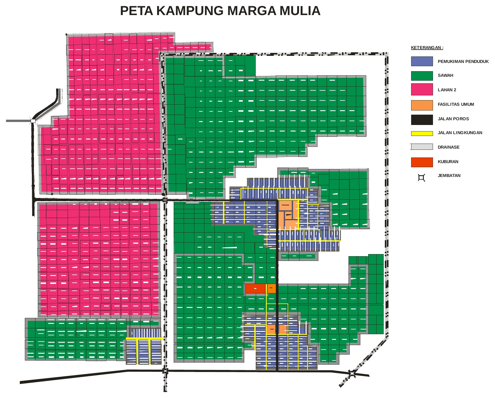

LANDASAN
Dasar hukum RPJMK
RPJMK Marga Mulya disusun untuk melaksanakan Pasal 79 ayat (3) Undang-Undang Nomor 6 Tahun 2014 tentang Desa, yang mewajibkan rencana pembangunan jangka menengah ditetapkan dengan peraturan desa (di Papua disebut peraturan kampung). Dokumen ini ditetapkan dengan Peraturan Kampung Marga Mulya Nomor 1 Tahun 2019 atas persetujuan bersama Badan Permusyawaratan Kampung dan Kepala Kampung.
Peraturan perundang-undangan yang menjadi rujukan penyusunannya:
- UU Nomor 12 Tahun 1969 tentang Pembentukan Propinsi Otonom Irian Barat dan Kabupaten-kabupaten Otonom di Propinsi Irian Barat
- UU Nomor 21 Tahun 2001 tentang Otonomi Khusus bagi Provinsi Papua, sebagaimana telah diubah dengan UU Nomor 35 Tahun 2008
- UU Nomor 25 Tahun 2004 tentang Sistem Perencanaan Pembangunan Nasional
- UU Nomor 12 Tahun 2011 tentang Pembentukan Peraturan Perundang-undangan
- UU Nomor 6 Tahun 2014 tentang Desa
- UU Nomor 23 Tahun 2014 tentang Pemerintahan Daerah, sebagaimana telah diubah terakhir dengan UU Nomor 9 Tahun 2015
- PP Nomor 40 Tahun 2006 tentang Tata Cara Penyusunan Rencana Pembangunan Nasional
- PP Nomor 43 Tahun 2014 tentang Peraturan Pelaksanaan UU Nomor 6 Tahun 2014 tentang Desa
- PP Nomor 60 Tahun 2014 tentang Dana Desa yang Bersumber dari APBN
- Permendagri Nomor 114 Tahun 2014 tentang Pedoman Pembangunan Desa
- Permendagri Nomor 20 Tahun 2018 tentang Pengelolaan Keuangan Desa
- Permendesa PDTT Nomor 1 Tahun 2015 tentang Pedoman Kewenangan Berdasarkan Hak Asal Usul dan Kewenangan Lokal Berskala Desa
- Perda Kabupaten Merauke tentang RPJMD Kabupaten Merauke (BAB I menyebut Perda Nomor 1 Tahun 2012; Peraturan Kampung menyebut Perda Nomor 1 Tahun 2016 tentang RPJMD 2016–2020)
- Peraturan Bupati Merauke Nomor 11 Tahun 2015 tentang Pedoman Penyusunan Perencanaan Pembangunan Kampung
Daftar di atas diringkas dari Bab I butir 1.3 dan bagian "Mengingat" pada Peraturan Kampung. Bunyi lengkapnya, termasuk nomor Lembaran Negara, ada di Bab I dan di dokumen PDF.
PERATURAN KAMPUNG
Peraturan Kampung Marga Mulya Nomor 1 Tahun 2019
TENTANG
RENCANA PEMBANGUNAN JANGKA MENENGAH KAMPUNG MARGA MULYA TAHUN 2019–2024
DENGAN RAHMAT TUHAN YANG MAHA ESA
KEPALA KAMPUNG MARGA MULYA,
- Menimbang
- bahwa untuk melaksanakan ketentuan dalam Pasal 79 ayat (3) Undang-Undang Nomor 6 Tahun 2014 tentang Desa, perlu membentuk Peraturan Kampung tentang Rencana Pembangunan Jangka Menengah Kampung Tahun 2019–2024;
- Mengingat
-
- Undang-Undang Nomor 12 Tahun 1969 tentang Pembentukan Propinsi Otonom Irian Barat dan Kabupaten-kabupaten Otonom di Propinsi Irian Barat;
- Undang-Undang Nomor 21 Tahun 2001 tentang Otonomi Khusus bagi Provinsi Papua sebagaimana telah diubah dengan Undang-Undang Nomor 35 Tahun 2008;
- Undang-Undang Nomor 12 Tahun 2011 tentang Pembentukan Peraturan Perundang-Undangan;
- Undang-Undang Nomor 6 Tahun 2014 tentang Desa;
- Undang-Undang Nomor 23 Tahun 2014 tentang Pemerintahan Daerah;
- Peraturan Pemerintah Nomor 43 Tahun 2014 tentang Peraturan Pelaksanaan Undang-Undang Nomor 6 Tahun 2014 tentang Desa;
- Peraturan Pemerintah Nomor 60 Tahun 2014 tentang Dana Desa yang Bersumber dari Anggaran Pendapatan dan Belanja Negara;
- Peraturan Menteri Dalam Negeri Nomor 114 Tahun 2014 tentang Pedoman Pembangunan Desa;
- Peraturan Menteri Desa, Pembangunan Daerah Tertinggal, dan Transmigrasi Nomor 1 Tahun 2015 tentang Pedoman Kewenangan Berdasarkan Hak Asal Usul dan Kewenangan Lokal Berskala Desa;
- Peraturan Daerah Kabupaten Merauke Nomor 1 Tahun 2016 tentang Rencana Pembangunan Jangka Menengah Daerah (RPJMD) Kabupaten Merauke Tahun 2016–2020;
- Peraturan Bupati Merauke Nomor 11 Tahun 2015 tentang Pedoman Penyusunan Perencanaan Pembangunan Kampung;
Dengan Persetujuan Bersama
BADAN PERMUSYAWARATAN KAMPUNG
dan
KEPALA KAMPUNG MARGA MULYA
MEMUTUSKAN:
- Menetapkan
- PERATURAN KAMPUNG TENTANG RENCANA PEMBANGUNAN JANGKA MENENGAH KAMPUNG MARGA MULYA TAHUN 2019–2024
BAB I — KETENTUAN UMUM
Pasal 1
Dalam Peraturan Kampung ini yang dimaksud dengan:
- Kampung adalah kesatuan masyarakat hukum yang memiliki batas-batas wilayah yang berwenang untuk mengatur dan mengurus kepentingan masyarakat setempat, berdasarkan asal-usul dan adat istiadat setempat yang diakui dan dihormati dalam sistem Pemerintahan Negara Kesatuan Republik Indonesia.
- Kepala Kampung adalah Kepala Kampung Marga Mulya.
- Pemerintah Kampung adalah Kepala Kampung dan Perangkat Kampung sebagai unsur penyelenggara pemerintahan Kampung.
- Rencana Pembangunan Jangka Menengah Kampung yang selanjutnya disingkat RPJMK adalah rencana kegiatan pembangunan Kampung untuk jangka waktu 6 (enam) tahun.
- Rencana Kerja Pembangunan Kampung yang selanjutnya disingkat RKPK adalah penjabaran dari RPJMK untuk jangka waktu 1 (satu) tahun.
BAB II — RENCANA PEMBANGUNAN JANGKA MENENGAH KAMPUNG
Pasal 2
RPJMK merupakan dokumen perencanaan pembangunan Kampung yang memuat visi dan misi Kepala Kampung, arah kebijakan pembangunan serta rencana kegiatan yang merupakan landasan dan pedoman bagi Pemerintah Kampung dalam melaksanakan pembangunan 6 (enam) tahun terhitung sejak tahun 2019 sampai dengan tahun 2024 dan pelaksanaan lebih lanjut dituangkan dalam RKPK.
Pasal 3
RPJMK sebagaimana dimaksud dalam Pasal 2 disusun dengan sistematika: BAB I Pendahuluan; BAB II Gambaran Umum Kampung; BAB III Visi, Misi, Tujuan dan Sasaran Pembangunan Kampung; BAB IV Arah Kebijakan, Bidang, Kegiatan dan Kebutuhan Pendanaan; BAB V Penutup.
Pasal 4
Sistematika sebagaimana dimaksud dalam Pasal 3 tercantum dalam Lampiran yang merupakan bagian tidak terpisahkan dari Peraturan Kampung ini.
Pasal 5
RPJMK wajib dilaksanakan oleh Kepala Kampung dalam rangka penyelenggaraan pembangunan di Kampung.
BAB III — KETENTUAN PENUTUP
Pasal 6
Peraturan Kampung ini berlaku pada tanggal diundangkan. Agar setiap orang mengetahuinya, memerintahkan pengundangan Peraturan Kampung ini dengan penempatannya dalam Lembaran Kampung Marga Mulya.
Ditetapkan di Marga Mulya
pada tanggal 01 Mei 2019
Kepala Kampung Marga Mulya,
Zubaidah Alfakir
Diundangkan di Marga Mulya pada tanggal 01 Mei 2019
Sekretaris Kampung Marga Mulya,
Sunaryo
Lembaran Kampung Marga Mulya Tahun 2019 Nomor 1
LAMPIRAN
Kata pengantar
Puji syukur kita panjatkan kehadirat Tuhan Yang Maha Esa atas limpahan rahmat dan hidayah-Nya sehingga dalam perumusan Rencana Pembangunan Jangka Menengah Kampung (RPJMK) Marga Mulya Distrik Semangga Kabupaten Merauke dapat diselesaikan dengan baik. Dalam penyusunan Rencana Pembangunan Jangka Menengah Kampung (RPJMK) Kampung Marga Mulya disusun berdasarkan masa jabatan Kepala Kampung Marga Mulya tahun 2019-20124. Masa jabatan Kepala Kampung telah merumuskan RPJMK. Untuk itu RPJMK Kampung Marga Mulya dirumuskan sesuai dengan masa jabatan Kepala Kampung Marga Mulya Tahun 2019-20124 dan dalam perumusan RPJMK dirumuskan sesuai dengan bidang dan kegiatan yang telah dilaksanakan dari tahun 2019-2024.
Hal ini memberikan amanah kepada pemerintah kampung untuk menyusun program pembangunan sendiri. Melalui proses perlibatan masyarakat dalam perencanaan dan penyelenggaraan pembangunan kampung Marga Mulya ini, diharapkan dapat meningkatkan kesejahteraan masyarakat secara merata dan berkeadilan yang lebih bisa dicapai dengan baik. Melalui dokumen Rencana Pembangunan Jangka Menengah Kampung (RPJMK) Kampung Marga Mulya ini dapat terwujud berkat kontribusi dari berbagai pihak yang memberikan data-data rencana pembangunan yang dibutuhkan dari tiap-tiap RT dan RW serta tokoh masyarakat dalam keterlibatan pelaksanaan penyusunan perencanaan pembangunan kampung selama tiga tahun kedepan. Melalui rapat kampung bersama dengan pengurus Bamuskan serta tokoh masyarakat Kampung Marga Mulya yang telah dilaksanakan dan memberikan hasil dalam penyusunan RPJMK ini untuk dapat dilaksanakan selama tiga tahun kedepan.
Oleh karena itu kami dari tim penyusunan RPJMK Marga Mulya mengucapkan banyak terima kasih kepada semua pihak yang telah membantu dalam penyusunan data-data yang dibutuhkan dalam Rencana pelaksanaan pembangunan kampung Marga Mulya. Dalam penyusunan ini kami dari Tim penyusunan RPJMK masih merasa adanya kekurangan di dalam penyusunan RPJMK, oleh sebab itu tim penyusun menharap kritik dan saran yang disusun dalam RPJMK ini untuk dapat diperbaiki lebih lanjut demi terciptanya rencana pembangunan kampung yang diharapkan dan lebih mengedepankan kemakmuran bagi masyarakat kampung Marga Mulya Distrik Semangga Kabupaten Merauke.
Marga Mulya, 01 Mei 2019
Kepala Kampung Marga Mulya,
Zubaidah Alfakir
BAB I
Pendahuluan
1.1 Latar Belakang
Salah satu elemen mendasar dalam penyelenggaraan pembangunan Kampung adalah ketersediaan RPJMK dan RKPK. Karena kedua dokumen tersebut merupakan arah dan kebijakan pembangunan jangka menengah dan jangka pendek Kampung. Maka kualitas RPJMK dan RKPK menjadi penting untuk menjadi perhatian baik dari segi proses penyusunannya, kualitas dokumen maupun kesesuaian dengan perundang-undangan. Pengkajian Keadaaan Kampung adalah merupakan proses wajib yang harus dilakukan untuk memastikan kualitas proses penyusunan Dokumen Perencanaan Kampung.
Pembangunan Kampung bertujuan meningkatkan kesejahteraan masyarakat Kampung dan kualitas hidup manusia serta penanggulangan kemiskinan melalui penyediaan pemenuhan kebutuhan dasar, pembangunan sarana dan prasarana, pengembangan potensi ekonomi lokal, serta pemanfaatan sumber daya alam dan lingkungan secara berkelanjutan. Untuk itu, dalam penyusunan dokumen perencanaan Kampung menggunakan 2 (dua) pendekatan, yaitu “kampung membangun” dan “membangun kampung bersama” yang diintegrasikan dalam perencanaan pembangunan Kampung.
Sebagai konsekuensinya, Kampung menyusun perencanaan pembangunan sesuai dengan kewenangannya dengan mengacu pada perencanaan pembangunan Kabupaten Merauke. Dokumen Rencana Pembangunan Kampung merupakan satu-satunya dokumen perencanaan di kampung dan sebagai dasar penyusunan Anggaran Pendapatan dan Belanja Kampung. Perencanaan pembangunan kampung diselenggarakan dengan mengikutsertakan masyarakat Kampung melalui musyawarah perencanaan pembangunan kampung. Musyawarah perencanaan pembangunan kampung menetapkan prioritas, program, kegiatan, dan kebutuhan pembangunan kampung yang didanai oleh Anggaran Pendapatan dan Belanja Kampung, swadaya masyarakat kampung, dan/atau Anggaran Pendapatan dan Belanja Daerah Kabupaten Merauke berdasarkan penilaian terhadap kebutuhan masyarakat Kampung. Pembangunan Kampung dilaksanakan oleh Pemerintah Kampung dan masyarakat kampung dengan semangat gotong royong serta memanfaatkan kearifan lokal dan sumber daya alam kampung. Pelaksanaan program sektor yang masuk ke kampung diinformasikan kepada Pemerintah Kampung dan diintegrasikan dengan rencana pembangunan Kampung. Masyarakat Kampung berhak mendapatkan informasi dan melakukan pemantauan mengenai rencana dan pelaksanaan pembangunan Kampung.
Dokumen perancanaan Kampung untuk jangka menengah Kampung adalah Rencana Pembangunan Jangka Menengah Kampung (RPJMK) yang merupakan dokumen perencanana untuk jangka waktu 6 (enam) tahun. RPJMK merupakan penjabaran visi dan misi kepala kampung terpilih dan arah kebijakan perencanaan pembangunan kampung. Arah perencanaan pembangunan kampung tetap harus memperhatikan arah kebijakan perencanaan pembangunan Kabupaten Merauke yang dituangkan dalam Rencana Pembangunan Jangka Menengah Daerah Kabupaten Merauke Tahun 2019-2024. Untuk itu RPJMD Kabupaten Merauke Tahun 2019-2024 menjadi pedoman dalam penyusuan RPJMK agar sistem perencanaan antara Daerah dan Kampung terjadi hubungan perencanaan agar pembangunan dapat dilakukan secara sistematis, efisien dan efektif.
RPJMK Kampung Marga Mulya yang disusun berdasarkan masa kerja Kepala Kampung Marga Mulia adalah Tahun 2019-2024, maka RPJMK Marga Mulia Tahun 2019-2024 menjadi pedoman bagi penyusunan Rencana Kerja Pemerintah Kampung untuk setiap tahunnya. RPJMK Kampung Marga Mulia akan menjadi landasan untuk menentukan skala prioritas RKPK yang selenjutnya akan dituangkan dalam Anggaran Pendapatan dan Belanja Kampung (APBK). Dalam RPJMK pada kesempatan ini akan menguraikan bidang dan kegiatan yang akan dikerja pada tahun 2019-2024.
RPJMK Kampung Marga Mulia akan menguraikan hal-hal yang akan dikerja dalam ke depan sehingga tahapan penyusuan skala prioritas agenda rencana pembangunan tahunan sehingga pada akhir masa jabatan Kepala Kampung akan terukur kenerja capaian hasil dan kinerja. Tahapan dan skala prioritas dari setiap perencanaan pembangunan dilakukan secara berkesinambungan dari Tahun ke Tahun sehingga mampu menjawab kebutuhan masyarakat melalui usulan kegiatan yang akan dikerja secara berkala. RPJMK harus menjadi dasar pengelolaan yang berbasisi pada pemecahan masalah di kampung sehinggan tujuan utama dalam pembangunan dapat terwujud, yaitu mensejahterakan masyarakat kampung secara merata dan adil.
RPJMK dilakukan dengan tahapan persiapan, penyelarasan arah kebijakan perencanaan pembangunan daerah, pengkajian keadaan Kampung, penyusunan recanan pembangunan Kampung melalui musyawarah Kampung, penyusunan rancangan RPJMK, penyusunan rencana pembangunan Kampung melalui musyawarah perencanaan pembangunan dan penetapan RPJMK. Dari tahapan ini tentunya perencanaan pembangunan Kampung akan lebih ditonjolkan adalah partisipasi masyarakat. Tahapan RPJMK ini tentunya akan memberikan harapan bagi pembangunan yang lebih partisipatif dan menjawab kebutuhan masyarakat.
Penyusunan RPJMK akan tepat sasaran bila disusun melalui tahapan yang benar serta melibatkan seluruh masyarakat Kampung dengan didukung oleh data sosial, ekonomi dan lingkungan yang berasal langsung dari masyarakat sehingga akan memberikan gambaran pencapaian hasil yang baik dan didukung oleh suatu konesp pembangunan yang menjawab kebutuhan masyarakat dan bukan keinginan dari elit Kampung. Oleh karena itu RPJMK Marga Mulia harus disusun berdasarkan sejarah Kampung, sumber daya alam, sumber daya manusia, sumber daya pembangunan, sumber daya sosial budaya, usulan rencanan pembangunan Kampung, gagasan kelompok, sketsa Kampung, kelender musim dan kelembagaan Kampung. Penyusunan RPJMK harus diarahkan untuk menyelesaikan permasalahan masyarakat Kampung terutama mengurangi angka kemiskinan di Kampung.
Dalam dokumen RPJM Kampung menggambarkan tentang potret Kampung yang dituangkan dalam bentuk narasi dan menyajikan data dengan memaparkan kondisi saat ini dengan masalah serta potensi yang dimiliki. Dokumen RPJM Kampung ini diharapkan menjadi landasan setiap kegiatan pembangunan di tingkat Kampung dan menjadi acuan di tingkat Kabupaten, dinas instansi maupun swasta.
1.2 Maksud dan Tujuan
Penyusunan RPJM Kampung Marga Mulia Tahun 2019-2024 disusun dengan maksud untuk:
- Memberikan arahan bagi pelaksanana pembangunan yang berkelanjutan dalam kurun waktu 6 (enam) tahun dalam rangka mewujudkan visi dan misi Kampung Marga Mulia yang secara tersistematis dalam mewujudkan kesejahteraan masyarakat Kampung; dan
- Mengharmonisasikan antara perencanaaan Daerah dan Kampung sehingga saling mendukung dalam pelaksanaan kegiatan pembangunan dengan memanfaatkan segala sumber daya yang dimiliki di Kampung.
Tujuan penyusunan RPJM Kampung Marga Mulia Tahun 2019-2024 adalah:
- Meningkatkan pembangunan Kampung yang lebih efektif sehingga perencanaan, pelaksanaan, evaluasi dan pelaporan pembangunan Kampung dapat dilaksanakan dengan baik;
- Menjadi dasar penyusunan RKPK yang terintegrasi dan berkesinambungan antara perencanaan dan penganggaran yang dituangkan dalam APBK; dan
- Meningkatkan penyelenggaraan pembangunan dengan melibatkan pasrtisipasi masyarakat dalam rangka peningkatan kesejahteraan dan perwujudan penyelenggaraan Pemrintahan Kampung yang baik.
1.3 Dasar Hukum Penyusunan
Adapun yang menjadi dasar hukum penyusunan RPJMK adalah sebagai berikut:
- Undang-Undang Nomor 12 Tahun 1969 tentang Pembentukan Propinsi Otonom Irian Barat dan Kabupaten-kabupaten Otonom di Propinsi Irian Barat (Lembaran Negara Republik Indonesia Tahun 1969 Nomor 47, Tambahan Lembaran Negara Republik Indonesia Nomor 2907);
- Undang-Undang Nomor 21 Tahun 2001 tentang Otonomi Khusus bagi Provinsi Papua (Lembaran Negara Republik Indonesia Tahun 2001 Nomor 135, Tambahan Lembaran Negara Republik Indonesia Nomor 4151) sebagaimana telah diubah dengan Undang-Undang Nomor 35 Tahun 2008 tentang Penetapan Peraturan Pemerintah Pengganti Undang-Undang Nomor 1 Tahun 2008 tentang Perubahan Atas Undang-Undang Nomor 21 Tahun 2001 tentang Otonomi Khusus Bagi Provinsi Papua (Lembaran Negara Republik Indonesia Tahun 2008 Nomor 112, Tambahan Lembaran Negara Republik Indonesia Nomor 4884);
- Undang-Undang Nomor 25 Tahun 2004 tentang Sistem Perencanaan Pembangunan Nasional (Lembaran Negara Republik Indonesia Tahun 2004 Nomor 104, Tambahan Lembaran Negara Republik Indonesia Nomor 4421);
- Undang-Undang Nomor 12 Tahun 2011 tentang Pembentukan Peraturan Perundang-Undangan (Lembaran Negara Republik Indonesia Tahun 2011 Nomor 82, Tambahan Lembaran Negara Republik Indonesia Nomor 5234);
- Undang-Undang Nomor 6 Tahun 2014 tentang Desa (Lembaran Negara Republik Indonesia Tahun 2014 Nomor 7, Tambahan Lembaran Negara Republik Indonesia Nomor 5495);
- Undang-Undang Nomor 23 Tahun 2014 tentang Pemerintahan Daerah (Lembaran Negara Republik Indonesia Tahun 2014 Nomor 244 Tambahan Lembaran Negara Republik Indonesia Nomor 5587) sebagaimana telah beberapa kali diubah terakhir dengan Undang-Undang Nomor 9 Tahun 2015 tentang Perubahan Kedua Atas Undang-Undang Nomor 23 Tahun 2014 tentang Pemerintahan Daerah (Lembaran Negara Republik Indonesia Tahun 2015 Nomor 58 Tambahan Lembaran Negara Republik Indonesia Nomor 5679);
- Peraturan Pemerintah Nomor 40 Tahun 2006 tentang Tata Cara Penyusunan Rencana Pembangunan Nasional (Lembaran Negara Republik Indonesia Tahun 2006 Nomor 97, Tambahan Lembaran Negara Republik Indonesia Nomor 4664);
- Peraturan Pemerintah Nomor 43 Tahun 2014 tentang Peraturan Pelaksanaan Undang Undang Nomor 6 tahun 2014 tentang Desa (Lembaran Negara Republik Indonesia Tahun 2014 Nomor 123, Tambahan Lembaran Negara Republik Indonesia Nomor 5539);
- Peraturan Pemerintah Nomor 60 Tahun 2014 tentang Dana Desa Yang Bersumber Dari Anggaran Pendapatan dan Belanja Negara (Lembaran Negara Republik Indonesia Tahun 2014 Nomor 168, Tambahan Lembaran Negara Republik Indonesia Nomor 5558);
- Peratuturan Menteri Dalam Negeri Nomor 114 Tahun 2014 tentang Pedoman Pembangunan Desa (Berita Negara Republik Indonesia Tahun 2014 Nomor 2094);
- Peratuturan Menteri Dalam Negeri Nomor 20 Tahun 2018 tentang pengelolaan Keuangan Desa (Berita Negara Republik Indonesia Tahun 2018);
- Peraturan Menteri Desa, Pembangunan Daerah Tertinggal, dan Transmigrasi Nomor 1 Tahun 2015 tentang Pedoman Kewenang Berdasarkan Hak Asal Usul dan dan Kewenangan Lokal Berskala Desa (Berita Negara Republik Indonesia Tahun 2015 Nomor1);
- Peraturan Daerah Kabupaten Merauke Nomor 1 Tahun 2012 tentang Rencana Pembangunan Jangka Menengah Daerah (RPJMD) Kabupaten Merauke Tahun 2015-2020 (Lembaran Daerah Kabupaten Merauke Tahun 2012 Nomor 1);
- Peraturan Bupati Merauke Nomor 11 Tahun 2015 tentang Pedoman Penyusunan Perencanaan Pembangunan Kampung (Berita Daerah Kabupaten Merauke Tahun 2015 Nomor 11).
1.4 Sistimatika Penulisan
Sistimatika penyusuan RPJMK terdiri dari atas 5 bab dengan perincian sebagai berikut:
BAB I PENDAHULUAN yang berisikan latar belakang, maksud dan tujuan, dasar hukum penyusunan serta sistimatika penulisan.
BAB II GAMBARAN UMUM KAMPUNG dimana memuat sejarah kampung, aspek geografis dan demogarfi Kampung, sumber daya alam, sumber daya manusia, sumber daya pembangunan, sumber daya sosial budaya, sketsa Kampung, kelender musim dan kelembagaan Kampung.
BAB III VISI, MISI, TUJUAN DAN SASARAN PEMBANGUNAN KAMPUNG memuat visi dan misi Kepala Kampung serta tujuan dan sasaran pembangunan.
BAB IV ARAH KEBIJAKAN, BIDANG, KEGIATAN DAN KEBUTUHAN PENDANAAN, di dalam bab ini memuat arah kebijakan, bidang dan kegiatan selain itu memuat juga kebutuhan pendanaan.
BAB V PENUTUP
BAB II
Gambaran Umum Kampung
2.1 Sejarah Kampung
Sesuai sejarah asal-usul Kampung Marga Mulya merupakan Masyarakat Transmigrasi, dari berbagai daerah jawa meliputi Jawa tengah terdiri Wonogiri, Boyolali dan Grobogan sedangkan dari dari jawa timur adalah Banyuwangi. Berawal kedatangan tersebut kemudian ditempatkan di Desa Semangga 1 B Sejak Tanggal 19 Januari Tahun 1983 (Masuk masyarakat Trans Pertama), saat itu di beri nama Desa Semangga 1 B. Pada Tahun 1984 Datang Lagi Masyarakat Transmigrasi Kedua, kemudian Di Tahun 1985 kedatangan Tambahan Masyarkat Tarnsmigrasi sebanyak 40 KK biasa disebut hingga sekarang Lokasi 40. Pada saat itu Desa Semangga 1 B menjadi 350 Kepala Keluarga dan dalam masa pembinaan KUPT sampai tahun 1985. Namun Pada tahun 1985 Desa Semangga 1 B lepas dari pembinaan KUPT dan saat itu melakukan Pemilihan Kepala Desa pertama. Dan dibentuklah Nama Desa Marga Mulya dengan Kepala Desa Terpilih LASIMAN, Desa tersebut berada di wilayah Kecamatan Merauke. Kepemimpinan Bapak Lasiman berlangsung sampai Tahun 1988. Kemudian pada Tahun yang sama Desa Marga Mulya melakukan pemilihan Kepala Desa kedua Tahun yang dan terpilih sebagai Kepala Desa adalah SUYOTO, masa periode tahun 1988-998.
Desa Marga Mulya sejak tahun 1988, hingga tahun 1998, mengalami perubahan terutama tentang pembangunan di bidang pertanian dan pengembangan lembaga Koperasi (KUD Usaha Tama) di bawah Pimpinan Kopersi atau KUD Usaha tama oleh Sudiono (Almarhum).
Pada tahun 1998 Desa Marga Mulya melakukan Pemilihan Kepala Desa yang ke-3. Dan terpilihlah PONIMAN SABARIYANTO Sejak itu nama Desa diganti dengan nama Kampung (Kampung Marga Mulya) masa periode tahun 1998-2006. Kampung Marga Mulya di saat itu secara berlahan mengalami perubahan tentang kemajuan pembangunan terutama di Bidang Pertanian dan peternakan serta Warung yang mulai berada di pinggir Jalan Poros yang hingga saat masih beraktifitas sering disebut (Warung Jagung).
Proses penggantian kepala kampung di Marga Mulya dilakukan melalui cara pemilihan langsung oleh masyarakat berdasarkan peraturan pemerintah yang berlaku. Pada tahun 2007 Kampung Marga Mulya kembali melaksanakan Pemilihan kepala Kampung Ke-4 dan terpilihlah Eva Hardianto dengan Masa Periode Kepemimpinannya pada tahun 2007-2013, seiring berjalan kepemimpinan pemerintahan maka dalam perjalanan pemerintahan mengalami beberapa hal sehingga Kepala kampung tersebut mengundurkan diri pada tahun 2011. Untuk menunjang pemerintahan dilanjutkan oleh PLT. Kepala Kampung SUNARYO (Sekretaris Kampung) dengan SK Kepala Distrik Semangga.
Dalam pelaksananan pembangunan kampung Marga Mulya yang dilanjutkan cenderung bersifat swadaya masyarakat, mengingat sumber dana pembangunan pemerintah masih sangat minim. Seiring berjalannya perkembangan Daerah, Kampung Marga Mulai mendapatkan dana-dana bantuan pembangunan Kampung yang semakin besar dari Pemerintah Daerah Kabupaten, sehingga masyarakat Kampung Marga Mulya mampu untuk berbuat lebih, dalam hal pembangunan Kampung. Dalam kapasitas Luas wilayah serta potensi yang ada, Kampung Marga Mulya sudah mempersiapkan untuk Pemekaran Kampung dan akhirnya semua fasilitas sudah kami siapkan baik Kantor/balai Kampung 2 unit, Pustu 2 unit, Sekolah Dasar 2 unit, TK 1 unit, PPaud 2 unit serta lapangan Olah Raga 2 Unit.
Pada tahun 2012 Kampung Marga Mulya Melaksanakan Pemilihan Kepala Kampung kembali yang Ke-5, saat itu terpilihlah Muntamah salah satu perwakian dari perempuan dan sebagai Kepala Kampung dengan masa periode Tahun 2012-2018.
Pada masa pemerintahan Seorang kepala kampung berakhir maka di tahun 2018 Kampung Marga Mulya Melaksanakan Pemilihan Kepala Kampung yang Ke-6, yang dilaksanakan pemilihan secara serentak pada tanggal 11 September 2018 dan pada saat ini terpilihlah Kepala Kampung baru yaitu : An.ZUBAIDAH ALFAKIR dengan masa periode Tahun 2019-2024, di tahun 2019 merupakan tahun awal kerja pada saa ini.
2.2 Aspek Geografis dan Demografi Kampung
a. Aspek Geografis
Kampung Marga Mulya salah satu Kampung yang terletak di wilayah Distrik Semangga Kabupaten Merauke dengan luas wilayah adalah ± 62.2 Km² (3.866 Ha) dengan batas-batas wilayah kampung sebagai berikut :
- Sebelah Utara berbatasan dengan : Wilayah Tanah Miring
- Sebelah Selatan berbatasan dengan : Kampung Semangga
Jaya
- Sebelah Timur berbatasan dengan : Kali Maro
- Sebelah Barat berbatasan dengan : Tanah Adat, Kampung
Waninggap Kay
Jika dilihat dari letak geografisnya Kampung Marga Mulya termasuk daerah daratan yang memiliki ketinggian antara 4 mdpl.
Secara administrasi Kampung Marga Mulya terdiri dari 7 (tujuh) Wilayah Rukun Warga (RW) dan tersebar 18 (delapan belas) Rukun Tetangga (RT) yakni RT 01, RT 02, dan RT 03, RT 04 S/d RT.18, yang masing-masing RT dikepalai oleh seorang ketua Rukun Tetangga (RT). Letak antar RT umumnya saling berdekatan. Komunikasi di Kampung Marga Mulya Sudah sangat Bagus, dan di dukung dengan jaringan komunikasi yang memadai, hal ini memperlancar komunikasi dengan aparat Kampung ataupun dengan masyarakat kampung lainnya yang ada diwilayah tersebut dengan baik.
Sebagaimana dikemukakan di atas Kampung Marga Mulya terletak di Distrik Semangga untuk itu jarak antara Kampung Marga Mulya ke ibu kota Distrik di Kampung Muram Sari adalah sejauh 15 Km, sedangkan jarak antara Kampung Marga Mulya ke ibu kota Kabupaten sejauh 18 Km. Kampung Marga Mulya saat ini untuk transportasi dikategorikan termasuk wilayah Perkotaan, namun dengan tingkat pertumbuhan dan pembangunan saat ini Kampung Marga Mulya sudah bisa di kategorikan sebagai wilayah Kota.
b. Kampung Rawan Bencana
Kampung Marga Mulya berjalan pernah mengalami musibah bencana banjir dan terjadi pada musim penghujan mengingat karena letak Kampung Marga Mulya tersebut, Sebagian besar terdapat Rawa yang menjadi tumpuhan aliran air hujan. Ini terjadi hanya di beberapa rumah warga yang letaknya rendah atau rawa.
c. Demografi Kampung
Jumlah penduduk Kampung Marga Mulya sebanyak 2.869 Orang yang terdiri dari laki-laki berjumlah 1.489 Orang dan perempuan berjumlah 1.380 orang. Tingkat kelahiran rata-rata dalam 4 tahun, yaitu tahun 2015-2018 mencapai 25% setiap tahun. Untuk tingkat kematian rata-rata setiap tahun mencapai 8%. Komposisi penduduk Kampung Marga Mulya berdasarkan agama, yaitu Islam berjumlah 2.039 orang, Katolik 734 orang, Kristen 47 orang dan Hindu 41 orang. Sedangkan komposisi penduduk berdasarkan etnis atau suku, yaitu Jawa Tengah, yaitu Grobogan, wonogiri, Boyolali, Purwodadi dan kebumen sejumlah 781 Orang, sedang dari Jawa Timur, yaitu Banyuwangi, trenggalek, blitar dan lumajang sejmlah 592 Orang, dan merupakan Kelahiran Merauke/Jawa Merauke berkisar 1.255 orang. Sedangkan Maluku/Kei berkisar 17 orang dan Bugis/Makasar 19 Orang serta penduduk Papua berasal dari Mandobo dan Mappi sejumlah 275 orang.
2.3 Sumber Daya Alam
Tabel II.1
Daftar Sumber Daya Alam
| No. | Uraian Sumber Daya Alam | Volume | Satuan |
|---|---|---|---|
| 1. | Lahan Pemukiman | 282 | Ha |
| 2. | Lahan Palawija | 183 | Ha |
| 3. | Lahan yang belum diolah | 118 | Ha |
| 4. | Lahan persawahan | 1.116 | Ha |
| 5. | Sungai | 2 | Km |
| 6. | Rawa | 46 | Ha |
Kampung Marga Mulya memiliki sumber daya alam terbatas karena Kampung Marga Mulya adalah kampung bekas transmigrasi. Sumber daya alam Kampung Marga Mulya terlihat bahwa Kampung Marga Mulya merupakan kampung yang mata pencariannya adalah Pertanian kerena pada Tabel II.1 di atas menunjukan lahan persawahan lebih besar dari lahan palawija karena kondisi tanah Kampung Marga Mulya lebih tepat digunakan persawahan. Luas lahan persawahan mencapai 1.116 Ha sedangkan lahan palawija hanya 183 Ha dan lahan yang belum dioleh lebih tepat digunakan untuk persawahan 118 Ha. Lahan yang belum diolah adalah lahan yang telah dibersihkan tetapi belum ditanami dan direncanakan akan digunakan sebagai lahan persawahan, Kampung Marga Mulya terdapat areal pertanian yang cukup luas. Marga Mulya merupakan sentral produksi padi sangat menunjang pelaksanaan pembangunan ekonomi masyarakat di bidang agro pertanian.
2.4 Sumber Daya Manusia
Tabel II.2
Daftar Sumber Daya Manusia
| No. | Uraian Sumber Daya Manusia | Jumlah | Satuan |
|---|---|---|---|
| 1. | Penduduk dan keluarga | 2.861 | orang |
| Jumlah penduduk laki-laki | 1.489 | orang | |
| Jumlah penduduk perempuan | 1.372 | orang | |
| Jumlah Kepala keluarga | 869 | keluarga | |
| 2. | Sumber penghasilan utama penduduk | ||
| Pertanian, perkebunan | 586 | keluarga | |
| Pertambangan dan penggalian | - | orang | |
| Industri pengolahan (pabrik, kerajinan, dll) | 6 | orang | |
| Perdagangan besar/eceran dan rumah makan | 28 | keluarga | |
| Angkutan | 15 | keluarga | |
| Jasa | 4 | orang | |
| 3. | Tenaga kerja berdasarkan latar belakang pendidikan | ||
| Lulusan S-1 keatas | 82 | orang | |
| Lulusan Diploma III | 71 | ||
| Lulusan SLTA | 523 | orang | |
| Lulusan SMP | 448 | orang | |
| Lulusan SD | 373 | orang | |
| Tidak Tamat SD/tidak sekolah | 511 | orang |
Tabel II.2, menggambarkan sumber daya manusia di Kampung Marga Mulya, dimana jumlah penduduk sebanyak 2.861 orang dengan jumlah laki-laki sebanyak 1.489 orang dan perempuan sebanyak 1.372 orang dan jumlah kepala keluarga sebanyak 869. Sumber penghasilan utama penduduk adalah pertanian berjumlah 596 kepala keluarga/1.060 Orang. Selain bertani keluarga yang mempunyai penghasilan dari perdagangan eceran dan kerajian sebanyak 256 kepala keluarga, untuk angkutan terdapat 17 kepala keluarga yang melakukan usaha dan untuk jasa yang terdiri dari guru dan tukang berjumlah 276 orang.
Sumber penghasilan utama penduduk adalah 100% pertanian, meskipun para petani mempunyai sumber penghasilan lain seperti pedagang besar, kios kecil, rumah makan, jasa angkutan, penggilingan padi. Dengan sumber utama pertanian hasil pertanian petani dengan menanam padi 1 Ha menghasilkan 4 ton gabah yang menghasikan beras mencapai 3 ton. Biaya produksi tanam sampai menjadi beras mencapai Rp. 10.500.000,- (sepuluh juta lima ratus ribu rupiah) sedangkan total hasil produksi beras Rp. 18.500.000,- (Delapan Belas juta lima ratus ribu rupiah). Tingkat produksi setiap 1 Ha adalah hasil dari olah lahan, bibit, cabut bibit, tanam, pupuk, obat-obatan, combine, ongkos muat, perlengkapan panen, dan jasa penggilingan. Dengan biaya yang besar Petani mulai berfikir untuk peningkatan ekonomi keluarga maka melakukan olah sawah dengan tanam gadu jadi dalam setahun dapat panen dua kali walaupun masih membutuhkan bantuan modal oleh pihak-pihak terkait. Petani diharapkan bertahap keluar dari kemiskinan meskipun di Kampung Marga Mulya terlihat pembangunan infrastruktur perumahan telah berkembang dengan baik, tetapi sesungguh masyarakat sedang berkembang dalam konteks pangan, akses pendidikan dan akses kesehatan. Namun ada kalanya petani masih mendapatkan beras rastra, meskipun sesungguhnya petani memproduksi beras.
Berdasarkan data rastra jumlah keluarga miskin di Kampung Marga Mulya 114 kepala keluarga hal ini menunjukan petani dengan tingkat produksi beras tentunya tetap dikategorikan miskin karena dalam 1 tahun penghasilan bersih atau rata-rata setiap bulan penghasilan Rp.1.000.000,- (Satu juta rupiah) setipa bulan. Perhitungan penghasilan ini dari produksi beras dikurangi biaya produksi sebasar Rp. 10.500.000,- (Sepuluh juta Lima ratus ribu rupiah).
Untuk tingkat pendidikan bila mencermati Tabel II.2 lulusan Strata Satu ke atas mencapai 0,67%, Lulusan Diploma III mencapai 1.21 %, lusulan SLTA mencapai 15,33%. Untuk warga masyarakat Kampung Marga Mulya yang lulus SMP mencapai 14,5%, sedangkan yang lulus SD mencapai 42,09% dan yang tidak lulus SD/tidak sekolah mencapai 17,16%. Tingkat prosentase masyarakat Kampung Marga Mulya yang tidak tamat SD/tidak sekolah dihitung termasuk anak-anak yang masih bersekolah di SD. Angka pendidikan yang tergambar dalam Tabel II.2 tersebut tentunya menggambarkan tingkat kesejahteraan masyarakat Marga Mulya, dimana dalam tingkat kemiskinan tergolong 37.37% anggota rumah tangga miskin.
2.5 Sumber Daya Pembangunan
Tabel II.3
Daftar Sumber Daya Pembangunan
| No. | Uraian Sumber Daya Pembangunan | Jumlah | Satuan |
|---|---|---|---|
| 1. | Aset Prasarana Umum | ||
| Jalan | |||
| Kabupaten | 4 | km | |
| Kampung | 38 | km | |
| Usaha Tani | 41 | km | |
| Jembatan | 24 | unit | |
| Drainase | 49 | km | |
| Gorong-gorong | 37 | unit | |
| Bendali (Kolam Tadah Air) | 5 | unit | |
| 2. | Aset Prasarana Pendidikan | ||
| Gedung Paud | 2 | unit | |
| Gedung TK | 1 | Unit | |
| Gedung SD | 2 | unit | |
| 3. | Aset Prasarana Kesehatan | ||
| Posyandu | 2 | unit | |
| Polinkam | 2 | unit | |
| MCK Umum | 3 | unit | |
| MCK Rumah Tangga | |||
| RT ada MCK | 782 | keluarga | |
| RT belum ada MCK | 49 | keluarga | |
| Air bersih/Kolam | 3 | unit | |
| 4. | Aset Prasarana Ekonomi | ||
| Hand Tractor | 42 | unit | |
| Jonder | 4 | unit | |
| Perontok padi (Combine/Power Tleser | 3 | unit | |
| Mobil | 34 | unit | |
| 5. | Kelompok Usaha Ekonomi Produktif | ||
| Jumlah kelompok usaha | 18 | kelompok | |
| Jumlah kelompok usaha yang sehat | 1 | kelompok | |
| 6. | Aset Berupa Modal | ||
| Total aset produktif | - | ||
| Total pinjaman di masyarakat | - |
Sumber daya pembangunan yang tergambar dalam Tabel II.3 mengenai aset prasara umum yang terdiri dari jalan yang terbagi dalam jalan kabupaten sepanjang 4 Km merupakan jalan yang melintasi Kampung Marga Mulya, jalan kampung 38 km yang merupakan jalan dalam kampung setiap jalur, dimana jalan tersebut pada musim hujan berlubang walau sudah dilakukan Pengerasan jalan tersebut masih bisa untuk dilalui. Jalan usah tani mencapai 41 km, badan jalan telah terbentuk tetapi belum dilakukan peningkatan (jalan usaha tani). Jembatan sebanyak 28 unit meliputi jembatan kayu sebanyak 18 unit (9 unit dalam keadan rusak) dan 12 jembatan belum terbangun untuk jalan masuk petani (pengolahan hingga membawa pulang hasil panen). Drainase yang telah direhab dan baik dengan panjang 35 km sedangkan yang belum direhab panjang mencapai 12 km. Gorong-gorong dalam kampung telah dibangun sebanyak 24 unit sedangkan yang belum dibangun sebnyak 11 unit. Untuk bendali atau kolam tadah air dari 5 unit semuanya telah mengalami pendangkalan dan bendali pernah dilakukan pembersihan atau rehabilitasi terhadap bendali tersebut 2 bendali.
Aset prasaran pendidikan di Kampung Marga Mulya terdapat 2 PAUD yang di bangunan oleh Pemerintah kampung tetapi pada saat ini perlu adanya perehapan dan pembangunan di 2 PPAUD kurang memadai dalam pelaksanaan pembinaan dan 1 TK. Juga terdapat 2 SD dibangun oleh Dinas Pendidikan Kabupaten Merauke. Aset prasaraan kesehatan pada Tabel II.3 pembangunan Polinkam dibangun oleh Dinas Kesehatan Kabupaten Merauke. Untuk MCK umum 3 unit yang di bangun oleh pemerintah Kampung Marga Mulya, namun tidak semua rumah tangga memiliki MCK secara permanen. Dari tabel II.3 tergambar rumah tangga yang memiliki MCK sebanyak 830 kepala keluarga sedangkan yang tidak memiliki MCK/cemblung sebanyak 39 kepala keluarga. Dari jumlah kepala keluarga di Kampung Marga Mulya 869 yang memiliki fasilitas air besih berupa sumur tadah hujan (penampungan) sabanyak 272 kepala keluarga sedangkan kepala keluarga 597 menggunakan Air bendali.
Aset prasarana ekonomi di Kampung Marga Mulya pada tabel II.3 sebagai Kampung yang penduduknya berpenghasilan dari pertanian, maka aset prasarana ekonomi yang ada adalah sarana prasarana pendukung pertanian seperti hand tractor, jonder dan perontok padi. Mengenai kelompok usaha ekonomi produktif berjumlah 18 kelompok tani dan semuanya masih melaksanakan aktivitas atau dalam kategori sehat.
2.6 Sumber Daya Sosial Budaya
Tabel II.4
Daftar Sumber Daya Sosial Budaya
| No. | Uraian Sumber Daya Sosial Budaya | Jumlah | Satuan |
|---|---|---|---|
| 1. | Kuda Lumping | 1 | kelompok |
| 2. | Majelis Taklim (Group rebana) | 6 | kelompok |
| 3. | Kelompok pengajian Muslimat | 1 | kelompok |
| 4. | Yasinan | 18 | kelompok |
| 5. | Pengajian Jumat Pahing (35 Hari Sekali) | 1 | kampung |
| 5. | Sekolah Minggu | 1 | kelompok |
| 6. | Taman Pengajian Al-Qur’an | 3 | kelompok |
Sumber daya sosial budaya pada Tabel II.4 menunjukan bahwa sumber daya sosial budaya merupakan Kampung yang sedang berkembang, bila dilihat dan keterlibatan masyarakat walaupun kini dengan jumlah penduduk 2.861 orang. Untuk Kelompok kuda lumping jumlah anggota 30 orang sedangkan kelompok agama/Majelis Taklim (rebana group) terdiri dari 4 kelompok yang masing anggotanya berjumlah 15 orang. Aspek agama terdapat 5 kelompok pengajian muslimat yang masing-masing anggota berjumlah 98 orang, kelompok Yasinan dilaksanakan setiap RT (setiap malam Jumat) berjumlah 18 RT setiap kelompoknya relative yaitu 18 anggota sampai 39 anggota untuk Pengajian jumat Pahing yang dilakukan masyarakat se-Kampung Marga Mulya dengan jumlah jamah mencapai 350 hingga 450 orang dan sekolah minggu berjumlah 37 orang serta taman pengajian Alqur-an sebanyak 3 kelompok dengan anggota sebanyak 227 Anak.
Dari jumal penduduk 2.861 orang tergambar dalam Tabel II.4 di atas keterlibatan masyarakat Kampung Marga Mulya untuk aspek sosial budaya Kampung Marga Mulya masuk dalam tahap Kampung berkembang. Motivasi untuk mengikuti kegiatan sosial budaya dianggap hal yang penting untuk itu peningkatan sangat perlu dorongan akan pentingnya aspek sosial budaya serta sangat membutuhkan sarana pendukung lainnya.
2.7 Sketsa Kampung
Gambar II.1
Sketsa Kampung Marga Mulya

Tabel II.5
Daftar Masalah dan Potensi dari Sketsa Kampung
| No. | MASALAH | POTENSI |
|---|---|---|
| 1. | Jalan RT.01-RT.17 berlubang dan Rusak | Tenaga gotong royong. |
| Listrik 5 KK belum ada listrik | Aliran listrik melewati Kampung. | |
| Lingkungan perumahan RT. 01 sebanyak 2 KK tidak layak huni | Tenaga gotong royong | |
| RT. 01 sebanyak 2 KK tidak memiliki MCK dan tidak layak | Tenaga gotong royong | |
| 2. | Jalan RT. 02 rusak dan berlubang | Tenaga gotong royong. |
| Saluran Air/Talut di RT. 12-14 perlu di bangun | Tenaga gotong royong | |
| RT. 02 sebanyak 1 KK tidak memiliki MCK dan tidak layak | Tenaga gotong royong | |
| Gorong RT.02 Perlu Pembangunan 2 unit | Tenaga gotong royong | |
| 3. | Jalan RT. 03 rusak dan berlubang | Tenaga gotong royong. |
| Gorong-gorong di RT. 03 perlu pembangunan 1 unit | Tenaga gotong royong | |
| Listrik 1 KK belum ada listrik | Aliran listrik melewati kampung. | |
| 4. | Jalan RT. 04 rusak dan berlubang | Tenaga gotong royong. |
| Saluran Air talut di RT. 04 rusak | Tenaga gotong royong | |
| Listrik 2 KK belum ada listrik | Aliran listrik melewati kampung. | |
| Lingkungan perumahan RT. 04 sebanyak 1 KK tidak layak huni | Tenaga gotong royong | |
| RT. 04 sebanyak 1 KK tidak memiliki MCK dan tidak layak | Tenaga gotong royong | |
| Grorong-gorong RT.04 Perlu Pembngunan 1 unit | Tenaga gotong royong | |
| 5. | Listrik 1 KK belum ada listrik | Aliran listrik melewati kampung. |
| Lingkungan perumahan RT. 05 sebanyak 1 KK tidak layak huni | Tenaga gotong royong | |
| RT. 04 sebanyak 2 KK tidak memiliki MCK dan tidak layak | Tenaga gotong royong | |
| Jembatan RT. 05 rusak 1 unit | Tenaga gotong royong. | |
| 6. | Jalan RT. 06 mengalami rusak dan berlubang | Tenaga gotong royong |
| Listrik 1 KK belum ada listrik | Aliran listrik melewati kampung. | |
| RT. 06 sebanyak 3 KK tidak memiliki MCK dan tidak layak | Tenaga gotong royong | |
| Gorong-gorong RT.06 Rusak 2 unit | Tenaga gotong royong | |
| 118 Ha lahan belum di olah | Peralatan pertanian (hand trauktor, jonder, mesin perontok padi, mesin pengupas kacang) Tenaga petani | |
| 7. | Jalan RT.07 mengalami rusak dan berlubang | Tenaga gotong royong |
| Listrik 1 KK belum ada listrik | Aliran listrik melewati kampung. | |
| RT.07 sebanyak 3 KK tidak memiliki MCK dan tidak layak | Tenaga gotong royong | |
| Gorong-gorong RT.07 Rusak 2 unit | Tenaga gotong royong | |
| 8. | Jalan RT.08 mengalami rusak dan berlubang | Tenaga gotong royong |
| Listrik 2 KK belum ada listrik | Aliran listrik melewati kampung. | |
| RT.08 sebanyak 3 KK tidak memiliki MCK dan tidak layak | Tenaga gotong royong | |
| Gorong-gorong RT.08 Rusak 3 unit | Tenaga gotong royong | |
| 9. | Listrik 3 KK belum ada listrik | Aliran listrik melewati kampung. |
| 10 | Listrik 3 KK belum ada listrik | Aliran listrik melewati kampung. |
| 11 | Jalan RT.11 mengalami rusak dan berlubang | Tenaga gotong royong |
| Listrik 2 KK belum ada listrik | Aliran listrik melewati kampung. | |
| RT.11 sebanyak 4 KK tidak memiliki MCK dan tidak layak | Tenaga gotong royong | |
| Gorong-gorong RT.11 Rusak 3 unit | Tenaga gotong royong | |
| 12 | Jalan RT.12 mengalami rusak dan berlubang | Tenaga gotong royong |
| Listrik 2 KK belum ada listrik | Aliran listrik melewati kampung. | |
| RT.12 sebanyak 2 KK tidak memiliki MCK dan tidak layak | Tenaga gotong royong | |
| Gorong-gorong RT.12 Rusak 2 unit | Tenaga gotong royong | |
| 13 | Jalan RT.13 mengalami rusak dan berlubang | Tenaga gotong royong |
| Gorong-gorong RT.13 rusak 2 unit | Tenaga gotong royong | |
| 14 | Jalan RT.14 mengalami rusak dan berlubang | Tenaga gotong royong |
| Listrik 1 KK belum ada listrik | Aliran listrik melewati kampung. | |
| RT.14 sebanyak 1 KK tidak memiliki MCK dan tidak layak | Tenaga gotong royong | |
| Gorong-gorong RT.14 Rusak 2 unit | Tenaga gotong royong | |
| 15 | Jalan RT.15 mengalami rusak dan berlubang | Tenaga gotong royong |
| Listrik 1 KK belum ada listrik | Aliran listrik melewati Kampung. | |
| RT.15 sebanyak 2 KK tidak memiliki MCK dan tidak layak | Tenaga gotong royong | |
| Gorong-gorong RT.15 Rusak 2 unit | Tenaga gotong royong | |
| Saluran Air/Talut di RT. 15 perlu di bangun | Tenaga gotong royong | |
| 16 | Jalan RT.16 mengalami rusak dan berlubang | Tenaga gotong royong |
| Gorong-gorong RT.14 Rusak 2 unit | Tenaga gotong royong | |
| 17 | Jalan RT.17 mengalami rusak dan berlubang | Tenaga gotong royong |
| Listrik 1 KK belum ada listrik | Aliran listrik melewati Kampung. | |
| RT.17 untuk PAUD tidak memiliki MCK | Tenaga gotong royong | |
| Gorong-gorong RT.17 Rusak 3 unit | Tenaga gotong royong | |
| Saluran Air/Talut di RT. 17 perlu di bangun | Tenaga gotong royong | |
| 18 | Listrik 4 KK belum ada listrik | Aliran listrik melewati Kampung. |
Tabel II.5 menunjukan permasalahan di Kampung Marga Mulya untuk setiap RT, dimana setiap RT mempunyai permasalahan yang sama. Permasalahan jalan kampung yang rusak dan berlubang pada saat hujan dialami oleh RT. 01, RT. 02, RT. 03, RT. 04 dan sampai RT.18. Walaupun sebagian besar telah dilakukan pengecoran/rabat beton yang panjangnya baru mencapai 65 % di masing-masing RT. Permasalahan yang terjadi disetiap RT mengenai saluran air, beberapa rumah warga masih ada yang belum dialiri listrik, perumahan yang tidak layak huni dan sanitasi yang masih buruk merupakan gambaran dari Kampung Marga Mulya. Potensi dalam mengatasi permasalahan dan tersedia di Kampung Marga Mulya terutama dari sumber daya alam cukup memadai dalam mengatasi permasalahan yang dihadapi oleh warga masyarakat Kampung Marga Mulya.
2.8 Kelender Musim Kampung
Tabel II.6, merupakan tabel yang menguraikan kelender musim di Kampung Marga Mulya yang dibagi dalam tiga musim, yaitu musim pancaroba, kemarau dan hujan. Selain itu menguraikan mengenai puncak dari musim yang diawali oleh masyarakat. Lambang bintang tiga menunjukan puncak dari musim yang dialami oleh masyarakat di Kampung Marga Mulya. Berikut ini adalah kelender musim dari Kampung Marga Mulya:
Tabel II. 6
Kelender Musim Marga Mulya
| MASALAH, KEGIATAN KEADAAN | MUSIM HUJAN | PANCA ROBA | MUSIM KEMARAU | |||||||||
|---|---|---|---|---|---|---|---|---|---|---|---|---|
| Jan | Feb | Mar | Apr | Mei | Jun | Jul | Agt | Sep | Ok | Nop | Des | |
| Banjir | * | ** | ||||||||||
| Diare | * | * | ** | *** | ||||||||
| Tanam Padi Rendengan | *** | ** | *** | *** | ||||||||
| Panen Padi Rendengan | ** | *** | ||||||||||
| Tanam padi Gadu | ** | *** | ||||||||||
| Panen padi Gadu | ** | *** | ||||||||||
| Kegiatan Hari Kegamaan | *** | * | ** | |||||||||
| Libur Sekolah | * | ** | ** | |||||||||
| Hama Tanaman | ** | * | ||||||||||
| Musim Hajatan/Pesta | *** | *** | ** | |||||||||
| Keterbatasan Air | * | * | ** | *** | *** | ** | ||||||
Dari kelender musim pada Tabel II. 6 di atas permasalahan yang dihadapi oleh masyarakat Kampung Marga Mulya adalah permasalahan kekurangan air bersih. Pada saat musim kemarau dari bulan Juli sampai dengan bulan November sumur yang menyediakan air bersih mengalami kekeringan sehingga masyarakat harus mengambil air bersih dari bendali atau kolam tadah hujan. Sebagaimana diuraikan dalam sumber daya pembangunan, dimana terdapat 5 bendali atau kolam tadah air tetapi telah mengalami pendangkalan karena sejak dibangun hanya 2 yang dilakukan pembersihan itupun yang sangat diharapkan adalah pembersihan atau rehabilitasi secara total sehingga debit air semakin menjamin, sedangkan kebutuhan masyarakat akan air bersih tergantung pada bendali tersebut.
Permasalahan yang dihadapi oleh masyarakat Kampung Marga Mulya pada musim tanam padi yaitu kurang tepat daangnya pupuk ke petani karena membutuhkan proses hingga sampai ke pengecer dan menyebabkan produksi padi menurun sehingga tidak sesuai dengan biaya produksi dan membuat petani mengalami kerugian. Potensi yang dimiliki Kampung Marga Mulya adalah sarana transportasi yang tersedia berupa truck milik masyarakat yang bisa mengangkut pupuk. Kendala yang dihadapi adalah penyeediaan pupuk harus mengikuti ketentuan pemasaran atau sesuai dengan rdkk kelompok tani.
Permasalahan produksi tanaman palawija mempunyai produksi yang cukup banyak seperti jagung dan berbagai jenis sayuran namun pemasaran yang mengalami kesulitan biaya produksi yang mahal namun harga dibawah standar. Hal ini disebabkan banyaknya petani palawija yang ada di Kabupaten Merauke yang bersamaan musim sayur sehingga sayuran cukup melimpah di Kota Merauke. Potensi Kampung Marga Mulya yang memiliki pedagang berbagai jenis hingga kini muncul warung-warung jagung dan yang lainya, masih kurangnya fasilitas dan permodalan.
Permasalahan penyakit diare di Kampung Marga Mulya terjadi pada saat pergantian musim dan hari raya karena terkait dengan konsumsi makan dan minuman. Potensi di Kampung Marga Mulya untuk mengatasi permasalahan diare adalah tersedinya tenaga medis dan obat-obatan.
Banjir di Kampung Marga Mulya terjadi pada saat musim hujan pada bulan Februari dan Maret disebabkan karena sungai atau draenase saluran Primer yang melintasi Kampung Marga Mulya meluap. Meskipun banjir tersebut hanya berlangsung dalam hitungan jam/hari dan pada 20 (sepuluh) kepala keluarga mengalami kebanjiran, namun bila tidak di jaga lingkungan sungai atau Drainase dikemudian hari tentunya akan lebih meluas wilayah banjir.
Tabel II.7
Daftar Masalah dan Potensi dari Kelender Musim
| No. | MASALAH | POTENSI |
|---|---|---|
| 1. | RT. 01 sampai dengan RT. 18 pada saat musim kemarau kekurangan air | Kolam Tadah Air Bendali Besar 2 Bendali kecil 3 |
| 2. | RT. 01 sampai dengan RT. 018 kesulitan pupuk saat musim tanam | Jalan Merauke-Marga Mulya baik Ada kendaraan milik Masyarakat (truck) |
| 3. | RT. 01 sampai dengan RT. 18 kesulitan pemasaran Sayur/Jagung ketika panen bersamaan | Jalan Merauke-Marga Mulya baik Ada kendaraan milik kampung (truck) Banyak Pedagang Kondisi barang dan harga tidak menentu |
| 4. | Kampung Marga Mulya mengalami diare | Tersedia tenaga medis Obat-obatan tersedia |
| 5. | Banjir dari sungai/kali di RT. 05, dan RT.14 Aliran got tidak lancar | Tenaga gotong royong |
2.9 Kelembagaan Kampung
Bagan kelembagaan pada Gambar II.2, di bahwa ini bukan bagan kelembagan kampung dalam bentuk struktur organisasi tetapi kelembagaan Kampung yang paling dekat dengan masyarakat. Bila melihat lembaga-lembaga yang ada dalam Kampung Marga Mulya dalam garis berbentuk persegi menunjukan kedekatan kelembagaan dalam Kampung yang dekat dengan masyarakat. Dari berbagai lembaga di Kampung Marga Mulya terlihat RT dan RW adalah lembaga kampung yang sangat dekat dengan masyarakat, karena proses administrasi sebelum sampai di Kepala Kampung harus melalui RT dan RW, selain itu segala aktivitas di Kampung Marga Mulya peran RT dan RW memainkan peran yang sangat penting karena proses koordinasi dari Pemerintah Kampung Marga Mulya untuk sampai ke masyarakat melalui RT dan RW berjalan dengan baik.
Potensi sumber daya alam dan sumber daya manusia di Kampung Marga Mulya dimana lahan persawahan, ladang palawija dan lahan yang belum diolah serta sumber penghasilan masyarakat dari pertanian, maka kelembagaan kelompok tani termasuk kelembagaan Kampung yang dekat dengan masyarakat. Demikian halnya Kepala Kampung dan aparat kampung serta Posyandu dan Polinkam.
Kelembagaan yang tidak dekat dengan masyarakat adalah Koperasi Unit Desa (Kampung). Lembaga KUD sebagai soko guru ekonomi ternyata tidak memberikan kontribusi bagi pertumbuhan ekonomi di Kampung Marga Mulya. KUD tidak berjalan ketika bergantian pengurus pertama dan kedua serta pengelolaannya tidak berkembang dan bahkan sudah tidak beraktivitas, namun pada kesempatan ini kami telah membentuk Badan Usaha Milik Kampung kedepan diharapkan akan menjadi pendukung pertumbuhan ekonomi masyarakat. Hal ini diamati juga oleh Karang Taruna merupakan wadah pemuda tetapi aktivitasnya adalah musiman. Dikatakan musiman karena hanya beraktivitas bila ada kegiatan hari besar seperti 17 Agustus dan lain-lain.
Gambar II.2
Bagan Kelembagaan Kampung
Permasalahan yang dihadipi oleh kelembagaan yang ada di Kampung Marga Mulya sebagaimana diuraikan dalam Tabel II.8 di bawah ini:
Tabel II.8
Daftar Masalah dan Potensi Bagan Kelembagaan Kampung
| No. | LEMBAGA | MASALAH | POTENSI |
|---|---|---|---|
| 1. | Kepala Kampung dan Aparat Kampung | Sumber daya manusia terbatas Pelaksanaan tugas masih kurang Keterlambatan honor Kesejahteraan kurang Pemahaman aturan perundang masih rendah | Kantor yang memadai Komputer di kampung ada. |
| 2. | BAMUSKAM | Sumber daya manusia Pemahaman peraturan perundang-undangan Kesejahteraan sangat kurang Tidak punya kantor ATK dan komputer tidak ada Pakaian seragam tidak ada | Lokasi untuk membangun kantor ada Tersedia komputer di kantor kampung terbatas |
| 3. | RT dan RW | Pemahaman tugas dan fungsi masih rendah Tidak punya ATK | Legalitas sebagai RT dan RW Lebih dekat dengan masyarakat |
| 4. | PKK | Pembinaan kurang | Ada kegiatan rutin bulan (arisan dan SPP) |
| 5. | LINMAS | Tidak memahami tugas dan fungsi Honor yang kurang menujang | Pembinaan dan pelatihan |
| 6. | Posyandu dan Polinkam | Fasilitas Gedung posyandu belum lengkap Keterbatasan tenaga | Perkembangan Balita banyak Butuh tenaga kader |
| 7. | Kelompok Tani | Pemahaman akan tugas dan fungsi organisasi | Seluruh kelompok aktif Tersedia lahan Butuh pelatihan |
| 8. | BUMK | Sudah terbentuk | Mulai Aktif |
| 9. | Karangtaruna | Bersifat musiman Pembinaan Koorganisasian | Tersedia sarana olah raga dan fasilitas |
BAB III
Visi, Misi, Tujuan dan Sasaran Pembangunan Kampung
3.1 Visi Kampung
RPJMK Kampung Marga Mulya tahun 2019-2024 merupakan penjabaran dari visi Kapala Kampung terpilih tahun 2018. Visi Kepala Kampung Marga Mulya terpilih baru dapat direalisasi dalam dokumen perencanaan tahun 2019 yang tentunya diharapkan memberikan pencapaian yang akan dicapai sebagai tujuan dan sasaran dari pembangunan Kampung. Upaya yang dilakukan untuk pencapaian selama kepemimpinan Kapala Kampung yang akan didukung oleh perangkat kampung dan seluruh masyarakat kampung.
Penyusunan RPJMK mengacu kepada RPJMD Kabupaten Merauke Tahun 2016-2020 serta dokumen perencanaan lainnya. Proses perencanaan Kampung tidak terlepas dari sistem perencanaan nasional yang terstruktur karena acuanya tetap pada RPJMD yang berdasarkan kepada RPJMD Provinsi dan RPJMD Provinsi berdasarkan RPJM Nasional.
Dalam rangka peningkatan kesejahteraan masyarakat di Kampung Marga Mulya yang tentunya didukung dengan penyelenggaraan pemerintahan Kampung yang berpihak kepada kepentingan masyarakat serta pelaksanaan pemerintahan yang baik, maka disusun visi pembangunan Kampung Marga Mulya tahun 2019-2024, yaitu:
“ TERWUJUDNYA KAMPUNG MARGA MULYA YANG MAJU, MANDIRI, BERMARTABAT DAN RELIGIUS ”
Visi Kepala Kampung Marga Mulya merupakan implementasi permasalahan dan perkembangan di Kampung Marga Mulya. terutama Maju, Mandiri dan Bermartabat mengandung arti mewujudkan system pelayanan diberbagai bidang yang lebih baik dari sebelumnya, membuka peluang kerja dengan berdirinya Badan Usaha Milik Kampung, kampung yang kreatif dan inovatif dengan menggali potensi Kampung dalam meningkatkan, menumbuh kembangkan perekonomian dibidang pertanian dan pariwisata lokal serta menjaga kewibawaan Kampung Marga Mulya dengan terwujudnya masyarakat yang beriman, bertaqwa berakhlak Mulya sehingga ajaran agama, khusunya yang bersifat universal dan nilai-nilai luhur budaya terutama kejujuran, dihayati dan diamalkan dalam prilaku kesehariannya.
Dan ditingkat pendidikan, Peningkatan sumber daya manusia diharapkan agar menjadi perhatian dari Kepala Kampung Marga Mulya. Dengan kesehatan yang baik dimulai dari kewenangan Kampung dalam hal ini pengelolaan atau pelayanan kesehatan yaitu : posyandu balita/lansia tentunya akan menciptakan generasi yang sehat dan cukup gizi, sehingga tingkat kecerdasan akan terwujud. Peningkatan kesejahteraan masyarakat dengan menurunkan angka kemiskinan di Kampung Marga Mulya yang mencapai 114 anggota keluarga miskin atau mencapai 13.20% dari jumlah 869 kepala keluarga.
3.2 Misi Kampung
Pembangunan Kampung Marga Mulya dilakukan dalam rangka peningkatan kompetensi sumber daya manusia yang mampu bersaing dalam menghadapi era globalisasi yang dikembangkan dari Kampung sehingga tidak tertinggal. Untuk itu perlu dilakukan penataan bidang dan kegiatan yang menciptakan pertumbuhan ekonomi dan sosial dengan peningkatan pelayanan pemerintahan Kampung berdasarkan kewenangan yang diberikan oleh Undang-Undang Nomor 6 Tahun 2014 tentang Desa dan Peraturan Pemerintah Nomor 43 Tahun 2014 tentang Peraturan Pelaksanaan Undang-Undang Nomor 6 Tahun 2014 tentang Desa.
Pemerintahan Kampung dituntut untuk meningkatkan pelayanan kepada masyarakat tanpa membedakan suku, agama, ras dan antar golongan sehingga dapat terwujud masyarakat Kampung Marga Mulya yang mandiri dalam rangka peningkatan sumber daya manusia menuju kesejahteraan yang utuh dalam aspek sosial, budaya, ekonomi dan lingkungan hidup. Pemerintahan Kampung Marga Mulya dengan sumber daya pendanaan yang ada telah memberikan perubahan dengan menyediakan sarana dan parasara pendidikan, kesehatan dan infrastruktur dalam rangka peningkatan kualitas hidup. Upaya untuk menurunkan angka kemiskinan didukung dengan peningkatan pelayanan pendidikan dan kesehatan serta peningkatan perekonomian dengan kegiatan pertanian dan palawija serta peternakan yang merupakan sumber penghasilan penduduk Kampung Marga Mulya. Kegiatan ekonomi dengan mengaktifkan kelompok tani dan berbagai potensi lahan pertanian, perkebunan dan palawija serta peternakan yang tersedia tentunya akan mempercepat kesejahteraan masyarakat serta membuka areal pariwisata.
Sistem keuangan Kampung yang saat ini mengalami perubahan dengan dana transfer berupa dana kegiatan pemberdayaan Kampung dengan alokasi dana Kampung yang dari waktu ke waktu mengalami peningkatan tentunya akan mendorong pembangunan infrastruktur dan ekonomi Kampung sehingga pemenuhan kebutuhan dasar bisa terwujud dengan baik terutama pada sandang, pangan dan papan. Gambaran wajah Kampung Marga Mulya yang sanitasi masih buruk dan perumahan tidak layak huni tentunya menjadi tantangan dalam rangka pembangunan kampung yang sesuai dengan kebutuhan masyarakat miskin di kampung Marga Mulya.
Dengan uraian tersebut dan dalam rangka terwujudnya visi pembangunan Kampung, maka dirumuskan misi dalam rangka penyelenggaraan pemerintahan Kampung, pelaksanaan pembangunan dan pelayanan kepada masyarakat Kampung sebagai berikut:
- Mengoptimalkan kinerja Perangkat Kampung dan Kelembagaan Kampung Marga Mulya secara maksimal sesuai tugas pokok dan fungsi guna tercapainya peningkatan Pelayanan kepada masyarakat di berbagai aspek secara tuntas
- Menciptakan Pendapatan asli Kampung melalui penggalian potensi serta pengelolan aset-aset Kampung dengan membentuk suatu wadah Badan Usaha Milik Kampung guna membuka lapangan kerja bagi masyarakat secara menyeluruh.
- Meningkatkan sarana Infrastruktur Jalan Lingkungan, Jalan Usaha Tani dan saluran pengedali banjir di Kampung Marga Mulya.
- Meningkatnya kepedulian dan keperpihakan terhadap kesehatan, pendidikan dan keamanan masyarakat.
- Meningkatkan pemberdayaan masyarakat Kampung menuju tertibnya partisipasi dan peran serta masyarakat dalam seluruh aspek pembangunan Kampung Marga Mulya.
- Meningkatkan system keamanan swakarsa dalam upaya terciptanya rasa aman,mengapresiasikan linmas dengan insentif yang layak dan memadai.
- Terciptanya peraturan Kampung guna terwujudnya pengayoman kepada Masyarakat Kampung Marga Mulya
- Menggali dan memanfaatkan potensi sumber daya alam; pertanian, perkebunan dan pengelolaannya menjadi aset Kampung, untuk menuju Kampung Agrowisata dan mengembangkan Wisata Lokal.
- Membangun dan mengintegrasikan mental spiritual masyarakat menuju masyarakat yang religius yang berlandaskan pancasila dan undang-undang dasar 1945.
- Mendorong terealisasinya pemekaran Kampung Marga Mulya
3.3 Tujuan dan Sasaran Pembangunan
Dari visi dan misi yang diuraikan di atas selanjutnya diwujudkan dalam tujuan dan sasaran pembangunan Kampung Marga Mulya, dimana Kepala Kampung Marga Mulya telah melaksanakan pada tahun 2019-2024. Untuk itu berikut ini adalah uraian tujuan dan sasaran berdasarkan misi sebagai berikut :
| Misi 1 | : | Mengoptimalkan kinerja Perangkat Kampung dan Kelembagaan Kampung Marga Mulya secara maksimal sesuai tugas pokok dan fungsi guna tercapainya peningkatan Pelayanan kepada masyarakat di berbagai aspek secara tuntas | |
|---|---|---|---|
| Tujuan | : | Terciptanya pelayanan yang baik sesuai tugas pokok dan fungsi aparat kepada masyarakat, menyelenggarakan pemerintahan yang transparan dan bertanggung jawab. | |
| Sasaran | : | 1. | Peningkatan pelayanan secara langsung dan berperan aktif kepada masyarakat; |
| 2. | Peningkatan sumber daya aparat kampung; | ||
| 3. | Tertib administrasi; | ||
| 4 | Terwujudnya data base kependudukan secara sistematis (teraplikasi). | ||
| Misi 2 | : | Menciptakan Pendapatan asli Kampung melalui penggalian potensi serta pengelolan aset-aset Kampung dengan membentuk suatu wadah Badan Usaha Milik Kampung guna membuka lapangan kerja bagi masyarakat secara menyeluruh | |
| Tujuan | : | Badan usaha milik kampung merupakan badan profit yang mampu meningkatkan pendapatan asli kampung, dan dapat menunjang potensi yang ada di kampung | |
| Sasaran | : | 1. | Pertumbuhan ekonomi masyarakat yang meningkat; |
| 2 | Tersedianya lapangan pekerjaan | ||
| 3 | Pengembangan pembangunan di semua lintas sektor | ||
| Misi 3 | : | Meningkatkan sarana Infrastruktur Jalan Lingkungan, Jalan Usaha Tani dan saluran pengedali banjir di Kampung Marga Mulya. | |
| Tujuan | : | 1. | Meningkatkan sarana Infrastruktur Jalan Lingkungan, Jalan Usaha Tani dan saluran pengedali banjir di Kampung Marga Mulya. |
| Sasaran | : | 1. | Peningkatan akses Transportasi masyarakat |
| 2. | Peningkatan sarana dan prasarana yang menunjang pertumbuhan ekonomi masyarakat | ||
| Misi 4 | : | Meningkatnya kepedulian dan keperpihakan terhadap kesehatan, pendidikan dan keamanan masyarakat. | |
| Tujuan | : | Terwujudnya pelayanan posyandu dalam rangka pelayanan ibu dan anak dan upaya kerja sama kepada pihak dinas terkait, serta giat menjaga kampung terutama memperhatikan Linmas secara keseluruhan. | |
| Sasaran | : | 1. | Layanan gizi dan pemberian PMT untuk balita; |
| 2. | Pemeriksaan ibu hamil, Pemberian vitamin dan susu ibu hamil; | ||
| 3 | Penyuluhan kesehatan secara terus menerus; | ||
| 4 | Gerakan hidup bersih dan sehat; | ||
| 5 | Penimbangan bayi; dan | ||
| 6 | Gerakan sehat untuk lanjut usia | ||
| 7 | Program sehat pendidikan anak usia dini | ||
| 8. | Terbentuknya Kampung sehat, aman, dan tertib. | ||
| Misi 5 | : | Meningkatkan pemberdayaan masyarakat Kampung menuju tertibnya partisipasi dan peran serta masyarakat dalam seluruh aspek pembangunan Kampung Marga Mulya. | |
| Tujuan | : | Mengedepankan kebersamaan, komunikasi, sosialisasi serta berinteraksi dengan baik dengan organisasi yang ada di kampung. | |
| sasaran | 1. | Mempertahankan kegiatan keagamaan seperti Pengajian rutin jumat pahing, majelis taklim dan sekolah minggu ataupun TPA; | |
| 2. | Menunjang kegiatan karang taruna; | ||
| 3. | Mempercepat pengembangan PKK di bidang simpan pinjam dan kegiatan lainya; | ||
| 4. | Menguatkan kelompok tani atau Gapoktan; | ||
| 5. | Cerdas yang dimulai dari pendidikan anak usia dini; | ||
| 6. | Paguyupan seni dan budaya seperti kesenian kuda lumping; | ||
| Misi 6 | : | Meningkatkan system keamanan swakarsa dalam upaya terciptanya rasa aman, mengapresiasikan linmas dengan insentif yang layak dan memadai. | |
| Tujuan | : | Mengoptimalkan peran satuan linmas dengan melibatkan peran serta masyarakat. | |
| Sasaran | : | 1. | Peran aktif kegiatan linmas; |
| 2. | Pos kampling di masing-masing RT; | ||
| 3. | Mengupayakan kesejahteraan linmas yang masih minim. | ||
| Misi 7 | : | Terciptanya peraturan Kampung guna terwujudnya pengayoman kepada Masyarakat Kampung Marga Mulya | |
| Tujuan | : | Pembangunan yang berdasarkan keputusan bersama. | |
| Sasaran | : | 1. | Pelaksanaan program yang berdasarkan perencanaan, dan ditetapkan dengan keputusan bersama; |
| 2. | Pengendalian permasalahan yang terjadi di wilayah RT/RW; | ||
| 3. | Mewujudkan pengayoman kepada masyarakat. | ||
| Misi 8 | : | Menggali dan memanfaatkan potensi sumber daya alam; pertanian, perkebunan dan pengelolaannya menjadi aset Kampung, untuk menuju Kampung Agrowisata dan mengembangkan Wisata Lokal. | |
| Tujuan | : | Membentuk usaha agrowisata, perkebunan dan pertanian serta peternakan | |
| Sasaran | : | 1. | Sebagai pusat percontohan pertanian; |
| 2. | Meningkatkan hasil usaha melalui agro di bidang pertanian, perkebunan dan peternakan | ||
| 3. | Peningkatan dan pengembangan hasil pertanian, perkebunan serta peternakan dari berbagai komoditi | ||
| Misi 9 | : | Membangun dan mengintegrasikan mental spiritual masyarakat menuju masyarakat yang religius yang berlandaskan pancasila dan undang-undang dasar 1945. | |
| Tujuan | : | Menumbuhkan nilai-nilai agama secara benar dan rasa toleransi antar umat beragama | |
| Sasaran | : | 1. | Memperbanyak kegiatan agama seperti Sekolah minggu, kegiatan majelis taklim, pengajian rutin dan perayaan hari besar agama; |
| Misi 10 | : | Mendorong terealisasinya pemekaran Kampung Marga Mulya | |
| Tujuan | : | Percepatan pembangunan yang merata secara keseluruhan | |
| Sasaran | : | 1. | Pemetaan wilayah dan penduduk yang sangat luas serta padat; |
| 2. | Pelayanan pembangunan yang maksimal; | ||
| 3. | Mempercepat pembangunan dan pertumbuhan ekonomi masyarakat. | ||
BAB IV
Arah Kebijakan, Bidang, Kegiatan dan Kebutuhan Pendanaan
4.1 Arah Kebijakan
Dari uraian mengenai visi, misi, tujuan dan sasaran pada Bab III, maka arah kebijakan yang akan dilaksanakan untuk mewujudkan sasaran dan tujuan adalah sebagai berikut:
Tabel IV.1
Arah Kebijakan
| Visi | : | Terwujudnya Kampung Marga Mulya yang Maju, Mandiri, bermartabat dan Religius | ||||||||||||||||||
|---|---|---|---|---|---|---|---|---|---|---|---|---|---|---|---|---|---|---|---|---|
| Misi 1 | : | Mengoptimalkan kinerja Perangkat Kampung dan Kelembagaan Kampung Marga Mulya secara maksimal sesuai tugas pokok dan fungsi guna tercapainya peningkatan Pelayanan kepada masyarakat di berbagai aspek secara tuntas | ||||||||||||||||||
| Tujuan | Sasaran | Kebijakan | ||||||||||||||||||
| Terciptanya pelayanan yang baik sesuai tugas pokok dan fungsi aparat kepada masyarakat, menyelenggarakan pemerintahan yang transparan dan bertanggung jawab. | 1. Peningkatan pelayanan secara langsung dan berperan aktif kepada masyarakat; | Meningkatkan pelayanan kepada masyarakat secara proaktif. | ||||||||||||||||||
| Peningkatan sumber daya aparat kampung | Peningkatan sdm melalui pendidikan di setiap bidang. | |||||||||||||||||||
| 3. Tertib administrasi | Data yang akurat mempercepat pelayanan | |||||||||||||||||||
| 4. Terwujudnya data base kependudukan secara sistematis (teraplikasi). | Pelayanan yang handal, maju dan lebih baik | |||||||||||||||||||
| Misi 2 | : | Menciptakan Pendapatan asli Kampung melalui penggalian potensi serta pengelolan aset-aset Kampung dengan membentuk suatu wadah Badan Usaha Milik Kampung guna membuka lapangan kerja bagi masyarakat secara menyeluruh. | ||||||||||||||||||
| Tujuan | Sasaran | Kebijakan | ||||||||||||||||||
| Badan usaha milik kampung merupakan badan profit yang mampu meningkatkan pendapatan asli kampung, dan dapat menunjang potensi yang ada di kampung | Pertumbuhan ekonomi masyarakat yang meningkat; | Mendukung kampung sehati dalam kesejahteraan masyarakat. | ||||||||||||||||||
| Tersedianya lapangan pekerjaan | Mempermudah lapangan usaha | |||||||||||||||||||
| Pengembangan pembangunan di semua lintas sektor | Penibgkatan kebersamaan masyarkat dalam pembangunan diberbagai bidang | |||||||||||||||||||
| Misi 3 | : | Meningkatkan sarana Infrastruktur Jalan Lingkungan, Jalan Usaha Tani dan saluran pengedali banjir di Kampung Marga Mulya. | ||||||||||||||||||
| Tujuan | Sasaran | Kebijakan | ||||||||||||||||||
| Meningkatkan sarana Infrastruktur Jalan Lingkungan, Jalan Usaha Tani dan saluran pengedali banjir di Kampung Marga Mulya.. | 1 | Peningkatan akses Transportasi masyarakat. | Membangun dengan semangat gotong royong di masyarakat | |||||||||||||||||
| 2 | Peningkatan sarana dan prasarana yang menunjang dalam pertumbuhan ekonomi masyarakat | Sehati untuk membangun kampung di berbagai bidang | ||||||||||||||||||
| Misi 4 | : | Meningkatnya kepedulian dan keperpihakan terhadap kesehatan, pendidikan dan keamanan masyarakat. | ||||||||||||||||||
| Tujuan | Sasaran | Kebijakan | ||||||||||||||||||
| Terwujudnya pelayanan posyandu dalam rangka pelayanan ibu dan anak dan upaya kerja sama kepada pihak dinas terkait, serta giat menjaga kampung terutama memperhatikan Linmas secara keseluruhan. | 1 | Layanan gizi dan pemberian PMT untuk balita; | Meningkatkan gizi anak | |||||||||||||||||
| 2 | Pemeriksaan ibu hamil, Pemberian vitamin dan susu ibu hamil; | Meningkatkan pelayanan ibu dan anak dalam pemeriksaan | ||||||||||||||||||
| 3 | Penyuluhan kesehatan secara terus menerus; | Memberikan penyuluhan kesehatan bagi masyarakat | ||||||||||||||||||
| 4 | Gerakan hidup bersih dan sehat | Mendukung gerakan hidup sehat dan bersih | ||||||||||||||||||
| 5 | Penimbangan bayi; | Memperhatikan pelayanan balita | ||||||||||||||||||
| 6 | Gerakan sehat untuk lanjut usia | Perhatian terhaap kesehatan lansia | ||||||||||||||||||
| 7 | Program sehat pendidikan anak usia dini | Mencerdaskan anak usia dini | ||||||||||||||||||
| 8 | Terbentuknya Kampung sehat, aman, dan tertib | Menjaga ketertiban dan keamanan bersama linmas | ||||||||||||||||||
| Misi 5 | : | Meningkatkan pelayanan kesehatan melalui posyandu dan menciptakan generasi yang sehat dan mandiri Meningkatkan pemberdayaan masyarakat Kampung menuju tertibnya partisipasi dan peran serta masyarakat dalam seluruh aspek pembangunan Kampung Marga Mulya. | ||||||||||||||||||
| Tujuan | Sasaran | Kebijakan | ||||||||||||||||||
| Mengedepankan kebersamaan, komunikasi, sosialisasi serta berinteraksi dengan baik dalam organisasi yang ada di kampung. | 1 | Mempertahankan kegiatan keagamaan seperti Pengajian rutin jumat pahing, majelis taklim dan sekolah minggu ataupun TPA; | Mengedepankan nilai nilai keagamaan dalam kehidupan bermasyarakat | |||||||||||||||||
| 2 | Menunjang kegiatan karang taruna; | Memberikan wadah dan keleluasaan kegiatan pemuda | ||||||||||||||||||
| 3 | Mempercepat pengembangan PKK di bidang simpan pinjam dan kegiatan lainya; | Pengembangan ekonomi kreatif di dalam pemberdayaan perempuan | ||||||||||||||||||
| 4 | Menguatkan kelompok tani atau Gapoktan;; | Membangunan di sector pertanian secara berkala | ||||||||||||||||||
| 5 | Cerdas yang dimulai dari pendidikan anak usia dini; | Perhatian penuh dalam pelaksanaan pendidikan anak usia dini | ||||||||||||||||||
| 6 | Paguyupan seni dan budaya seperti kesenian kuda lumping; | Pelestarian seni dan budaya yang di lingkup masyarakat | ||||||||||||||||||
| Misi 6 | : | Meningkatkan system keamanan swakarsa dalam upaya terciptanya rasa aman, mengapresiasikan linmas dengan insentif yang layak dan memadai. | ||||||||||||||||||
| Tujuan | Sasaran | Kebijakan | ||||||||||||||||||
| Mengoptimalkan peran satuan linmas dengan melibatkan peran serta masyarakat. | Peran aktif kegiatan linmas; | Kebersamaan meningkatkan keamanan dan ketertiban dalam masyarakat | ||||||||||||||||||
| 2 | Pos kampling di masing-masing RT; | Melangsungkan jaga ronda (pos Kampling) | ||||||||||||||||||
| 3 | Mengupayakan kesejahteraan linmas yang masih minim. | Melakukan kegiatan linmas setiap tahun | ||||||||||||||||||
| Misi 7 | : | Terciptanya peraturan Kampung guna terwujudnya pengayoman kepada Masyarakat Kampung Marga Mulya | ||||||||||||||||||
| Tujuan | Sasaran | Kebijakan | ||||||||||||||||||
| Pembangunan yang berdasarkan keputusan bersama. | 1 | Pelaksanaan program yang berdasarkan perencanaan, dan ditetapkan dengan keputusan bersama; | Sebagai rambu dalam pelaksanaan program | |||||||||||||||||
| 2 | Pengendalian permasalahan yang terjadi di wilayah RT/RW; | System yang jelas dan memberikan solusi dalam setiap permasalahan | ||||||||||||||||||
| 3 | Mewujudkan pengayoman kepada masyarakat. | Perlindungan yang jelas dan proaktif kepada masyarakat | ||||||||||||||||||
| Misi 8 | : | Menggali dan memanfaatkan potensi sumber daya alam; pertanian, perkebunan dan pengelolaannya menjadi aset Kampung, untuk menuju Kampung Agrowisata dan mengembangkan Wisata Lokal. | ||||||||||||||||||
| Tujuan | Sasaran | Kebijakan | ||||||||||||||||||
| Membentuk usaha agrowisata perkebunan dan pertanian | 1 | Penguatan modal badan usaha milik kampung di sektor wisata | Membentuk Kampung yang kreatif dan inovasi dalam pengembangan potensi kampung | |||||||||||||||||
| 2 | Meningkatkan hasil usaha melalui agro di bidang pertanian, perkebunan dan peternakan | Mendukung dalam hasil pertanian, perkebunan dan peternakan dalam peningkatan usaha agro | ||||||||||||||||||
| 3 | Peningkatan dan pengembangan hasil pertanian, perkebunan serta peternakan dari berbagai komoditi | Menigkatkan usaha dan hasil pertanian, perkebunan serta peternakan | ||||||||||||||||||
| Misi 9 | : | Membangun dan mengintegrasikan mental spiritual masyarakat menuju masyarakat yang religius yang berlandaskan pancasila dan undang-undang dasar 1945. | ||||||||||||||||||
| Tujuan | Sasaran | Kebijakan | ||||||||||||||||||
| Menumbuhkan nilai-nilai agama secara benar dan rasa toleransi antar umat beragama | 1 | Memperbanyak kegiatan agama seperti Sekolah minggu, kegiatan majelis taklim, pengajian rutin dan perayaan hari besar agama; | Menciptakan keharmonsan terhadap antar umat beragama | |||||||||||||||||
| Misi 10 | : | Mendorong terealisasinya pemekaran Kampung Marga Mulya | ||||||||||||||||||
| Tujuan | Sasaran | Kebijakan | ||||||||||||||||||
| Percepatan pembangunan yang merata secara keseluruhan | 1 | Pemetaan wilayah dan penduduk yang sangat luas serta padat; | Memperjelas batas wilayah kampung | |||||||||||||||||
| 2 | Pelayanan pembangunan yang maksimal; | Mempercepat tumbuh kembangnya kampung | ||||||||||||||||||
| 3 | Percepatan pembangunan dan pertumbuhan ekonomi masyarakat | Masyarakat lebih mudah dan merasakan tepatnya program yang direncanakan serta pelaksanaannya | ||||||||||||||||||
4.2 Bidang, Kegiatan dan Kebutuhan Pendanaan
Sebelum menentukan bidang kegiatan dilakukan pengumpulan gagasan kegiatan yang diperoleh dari dari berbagai kelompok di dalam Kampung Marga Mulia. Kelompok yang dimaksud adalah kelompok dari setiap Rukun Tentangga (RT), kelompok perempuan, kelompok pemuda, keluarga miskin, tokoh agama, kelompok kesenian, guru dan petugas kesehatan serta semua kepentingan yang berada di dalam Kampung Marga Mulia. Dari proses gagasan kegiatan kelompok selanjutya dilakukan rekapitulasi di dalam bidang dan kegiatan. Dari gagasan kegiatan kelompok terdapat kegiatan yang bukan kewenangan kampung, namun merupakan kebutuhan dari kampung itu sendiri sehingga menjadi catatan dalam rangka penyusunan kegiatan yang diimplementasikan dalam sistem anggaran.
Tabel IV.2 di bawah ini memuat daftar gagasan kegiatan kelompok selanjutnya diuraikan dalam Tabel IV.3 yang memuat rekapitulasi usulan rencana kegiatan berdasarkan bidang yang telah ditentukan dalam Undang-Undang Nomor 6 Tahun 2014 tentang Desa. Dari Tabel IV.2 dan Tebel IV.3 kemudian dituangkan dalam Tabel IV.4 menguraikan bidang, kegiatan dan pendanaan RPJMK Marga Mulya Tahun 2019-2024.
Tabel IV.2
Daftar Gagasan Kegiatan Kelompok
| No. | Gagasan Kegiatan | Lokasi Kegiatan | Perkiraan Volume | Satuan | Penerima Manfaat | ||
|---|---|---|---|---|---|---|---|
| Laki-laki | Perempuan | A-RTM (KK) | |||||
| 1. | Pemberian insentif guru honor PAUD dan TK | Marga Mulia | 7 | orang | - | 7 | - |
| 2. | Rehabilitas Gedung PPAUD Dan Pembangunan PPAUD | Marga Mulia | 2 | unit | 26 | 23 | - |
| 3. | Pengadaan APE dalam Dan APE luar Paud dan TK | Marga Mulia | 3 | unit | 74 | 51 | 41 |
| 4. | Bantuan beasiswa SD Dan SMP siswa yang tidak mampu | Siswa | 120 | anak | 58 | 62 | 36 |
| 5. | Bantuan beasiswa SD yang berprestasi | Siswa | 108 | anak | 57 | 51 | |
| 6. | Perlengkapan alat Posyandu (meja, taplak meja dan bangku) peningkatan gizi, pelayanan ibu hamil, pemberian makan tambahan dan pelayanan lanjut usia | Marga Mulia | 1 | paket | 104 | 122 | 214 |
| 7. | Operasi Pos Kesehatan | Marga Mulia | 5 | Balita | 2 | 3 | 214 |
| 8 | Rehabilitasi Gedung Posyandu | 1 | unit | 144 | 241 | 214 | |
| Insentif Kader Posyandu dan Kader Lansia | 13 | orang | 13 | ||||
| Perawatan Ambulance Kampung | 1 | Unit | 1.489 | 1.372 | 214 | ||
| 9. | Rehap Gereja | Marga Mulia | 1 | unit | 141 | 124 | 38 |
| 10. | Pengadaan alat olah raga dan kesenian (kostum olah raga, bola kaki dan sond system) | Marga Mulia | 3 3 1 1 | Paket Paket lusin unit | 1.552 | 1.372 | 214 |
| 11. | Insentif pengurus PKK | 12 | orang | 12 | |||
| 12. | Pengadaan alat dapur PKK 74 dasa wisma | Marga Mulia | 1 | paket | 540 | ||
| 13. | Pengadaan mebeler | 10 | unit | 1.489 | 1.372 | 214 | |
| 14. | Pembuatan Gapura | 3 | unit | 1.489 | 1.372 | ||
| Pembuatan Papan nama RT/RW dan Aparat Kampung | 34 | Unit | 1.489 | 1.372 | |||
| 15. | Insentif guru Ngaji | Marga Mulia | 31 | orang | 234 | 254 | |
| 16. | Pengecoran jalan (Rabat Beton 2 Jalur) | RT. 01, RT. 02, RT. 03, RT. 04, RT. 06, RT. 07, RT. 08,09 RT. 11, RT. 12, RT. 13, RT. 14, RT. 15, RT. 16, RT. 17 | 5.660 | meter | 1.489 | 1.372 | 214 |
| 17. | Gorong-gorong Usaha Tani | RT. 01, RT. 02, RT. 03, RT. 04, RT.05, 06, RT. 07, RT. 08,09 RT.11, 12, RT.13 14, RT. 15, RT. 16, RT. 17 | 24 | unit | 1.489 | 1.372 | 214 |
| 18. | Gorong-gorong Lingkungan | RT. 02, RT. 03, RT. 04, RT.05 RT. 06, RT. 07, RT. 08, RT.09, 11, RT. 12, RT. 13, RT. 14, RT. 15, RT. 16, 17 RT. 18 | 23 | unit | 1.489 | 1.372 | 214 |
| 19. | ATK Pemerintah Kampung, BAMUSKAM, RT dan RW | Marga Mulia | 54 | paket | 1.489 | 1.372 | |
| 20. | Pengadaan Lepotop dan Printer | Marga Mulia | 10 | unit | 1.489 | 1.372 | |
| 21. | Pembangunan gudang Kampung | Marga Mulia | 1 | unit | 1.489 | 1.372 | |
| 22. | Pembangunan air bersih | Marga Mulia | 4 | unit | 1.489 | 1.372 | |
| 23. | Pengadaan provil teng | Marga Mulia | 3 | unit | 1.489 | 1.372 | |
| 24. | Penguatan Modal BUMK | Marga Mulia | 1 | Paket | 1.489 | 1.372 | 214 |
| 25. | Penambahan perlengkapan BUMK | Marga Mulia | 1 | Paket | 1.489 | 1.372 | 214 |
| 26. | Penentuan batas wilayah kampung | Marga Mulia | 1 | dokuemn | 1.489 | 1.372 | 214 |
| 27. | Rehabilitasi perumahan warga | Warga marga mulya | 19 | unit | 17 | 17 | 214 |
| 28. | Pembuatan Saluran air | RT.01-RT.08, RT. 11- RT. 17 | 7.480 | meter | 1.489 | 1.372 | 214 |
| 29. | Perehapan bendali Besar dan Kecil | Marga Mulia | 5 | unit | 1.589 | 1.372 | 214 |
Tabel IV.3
Rekapitulasi Usulan Rencana Kegiatan Berdasarkan Bidang
| No. | Usulan Rencana Kegiatan Berdasarkan Bidang | Rencana Lokasi Kegiatan | Perkiraan Volume | Satuan | Penerima Manfaat | ||
|---|---|---|---|---|---|---|---|
| Laki-laki | Perempuan | A-RTM | |||||
| 1. | Penyelenggaraan Pemerintah Kampung | ||||||
| Penetapan dan penegasan batas Kampung Penetapan Batas Kampung Papan nama RT/ RW | Marga Mulia | 3 33 | Unit Buah | 1.489 | 1.372 | 214 | |
| Pendataan Kampung Penginputan data dalam monografi Pembuatan Peta dan papan informasi Kampung | Marga Mulia Marga Mulia | 1 6 | Paket Paket | 1.489 1.489 | 1.372 1.372 | 214 214 | |
| Penyelenggaraan musyawarah Kampung Musyawarah Bamuskam Musrembang kampung Musyawarah Lain | Marga Mulia | 12 18 12 | Kali kali kali | 1.489 1.489 | 1.372 1.372 | 214 214 214 | |
| Pengelolaan informasi Kampung Pengumpulan data dasar keluarga hasil sensus | Marga Mulia | 3 | Kali | 1.489 | 1.372 | 214 | |
| Penyelenggaraan perencanaan Kampung RPJMK RKPK | Marga Mulia Marga Mulia | 1 6 | dokumen dokumen | 1.489 1.489 | 1.372 1.372 | 214 214 | |
| Penyelenggaraan evaluasi tingkat perkembangan pemerintahan Kampung Pembayaran honor aparat kampung Pembayaran Honor RT, RW Honor Bamuskam Operasional pemerintah Kampung Operasional Bamuskam Operasional RT, RW | Marga Mulia | 504 1.800 648 6 6 6 | Orang Orang Orang Kali Kali Paket | 4 25 9 8 9 25 | 3 | ||
| Penyelenggaraan kerjasama antar Kampung Pertemuan Koordinasi antar kampung | Marga Mulya | 3 | Kali | 1.489 | 1.372 | 214 | |
| Pembangunan sarana dan prasarana kantor Kampung Pagar Penimbunan halaman Gudang Kampung Tempat parkir Taman kampung Lampu taman | Marga Mulia | 700 600 1 1 2 2 | Meter Ret Unit Unit Unit Unit | 1489 | 1372 | 214 | |
| Pengadaan Fasilitas Kantor Kampung Pengadaan Terup Lap top dan Printer | Marga Mulia | 6 10 6 | Unit Unit Unit | 1.489 | 1372 | ||
| 2. | Bidang Penyelenggaraan Pembangunan Kampung | ||||||
| Pembangunan, pemanfaatan dan pemeliharaan infrasruktur dan lingkungan Kampung antara lain: | |||||||
| Jalan pemukiman (Rabat Beton 2 jalur) Gorong-Gorong | RT. 01, RT. 02, RT. 03, RT. 04, RT. 06, RT. 07, RT. 08, RT. 11, RT. 12, RT. 13, RT. 14, RT. 15, RT. 16, RT. 17 RT. 01, RT. 02, RT. 03, RT. 04, RT. 06, RT. 07, RT. 08,09 RT. 11, RT. 12, RT. 13, RT. 14, RT. 15, RT. 16, RT. 17,18 dan Gereja | 8.725 23 | Meter Unit | 1.489 1.489 | 1.372 1.372 | 214 214 | |
| Jalan Kampung antar permukiman ke wilayah pertanian Jalan Usaha Tani Gorong-gorong Usaha Tani | Marga mulia | 8.000 24 | meter unit | 1489 | 1372 | 214 | |
| 4. Pembangunan sarana olahraga kampung meliputi : Lapangan bola voly Lapangan footsal Lapangan sepak bola | Marga Mulia | 1 1 1 | Unit Unit Unit | 1489 | 1372 | 214 | |
| Pembangunan, pemanfaatan dan pemeliharaan sarana dan prasarana kesehatan antara lain: | |||||||
| Air bersih berskala Kampung Penampungan Air Profil teng | Marga Mulia | 2 2 | unit Unit | 1.489 | 1.372 | 214 | |
| Sanitasi lingkungan Perbuatan saluran air | RT. 02, RT. 04, RT. 11, RT. 15, RT. 16, RT. 17 | 1.700 | Meter | 1.489 | 1.372 | 214 | |
| Pelayanan kesehatan Kampung melalui posyandu: Layanan gizi untuk balita; Pemeriksaan ibu hamil; Pemberian makanan tambahan; Penyuluhan kesehatan tentang Gerakan hidup bersih dan sehat; Pemeriksaan dan pengobatan lanjut usia Perlengkapan pos yandu balita dan lansia | Marga Mulia | 678 78 6 9 36 1 | Balita Bumil Kali Kali Bulan Paket | 104 104 1.552 40 144 | 122 78 122 1.344 119 241 | - - 305 | |
| Pembangunan gedung Pos Yandu | Marga Mulia | 1 | Unit | 1.552 | 1.344 | 305 | |
| Pembangunan, pemanfaatan dan pemeliharaan sarana dan prasarana pendidikan dan kebudayaan antara lain: | |||||||
| Taman bacaan masyarakat | Marga ulia | 1000 | judul | 1.489 | 1.372 | 214 | |
| Pendidikan anak usia dini Pembangunan PAUD An Nasiroh Pembuatan teras gedung PAUD Perehapan PAUD Azzahro dan TK Mitra Mulia Pengadaan APE dalam dan APE Luar | Marga Mulia | 1 2 3 | Unit Unit Paket | 24 50 74 | 19 32 51 | 214 214 214 | |
| Pengembangan usaha ekonomi produktif serta pembangunan, pemanfaatan dan pemeliharaan sarana dan prasarana ekonomi antara lain: | |||||||
| Pembentukan dan pengembangan BUMK | Marga Mulia | 1 | Paket | 1.489 | 1.372 | 214 | |
| Penguatan permodalan BUMK | Marga Mulia | 1 | Paket | 1.489 | 1.372 | 214 | |
| Alat Pertanian : Pemotong padi (Combine) Hand Traktor Pompa air Pembenihan padi unggul dan palawija Pengadaan ternak - sapi dan - unggas | Marga Mulia | 1 9 6 3 30 1000 | Unit Unit Unit Paket Ekor Ekor | 1.489 1.489 1.489 1.489 1.489 1.489 | 1.372 1.372 1.372 1.372 1.372 1.372 | 214 214 214 214 214 214 | |
| 3. | Bidang pembinaan kemasyarakatan | ||||||
| Penyelenggaraan ketentraman dan ketertiban Pos kampling Pengadaan Seragam linmas Penyuluhan hukum dan hak asasi manusia Pelatihan Linmas | Marga Mulia | 18 14 3 3 | Unit Stel Kali Kali | 1.489 1.489 1.489 1.489 | 1.372 1.372 1.372 1.372 | 214 214 214 214 | |
| Pembinaan kerukunan umat beragama Insentif guru Ngaji Insentif Mudin Insentif guru sekolah minggu Insentif Penjaga makam. Pengadaan Al-Qur’an Pengadaan Al kitab Pengadaan Bangku Gereja Pengadaan Sajadah Stimulan karang taruna Stimulan Majels taklim Stimulan kelompok yasinan Stimulan pengajian jumat paing Stimulan kelomok jamaah muslimat | Marga Mulia Masjid Gereja Gereja Masjid Marga Mulia | 69 6 3 6 45 30 20 6 3 12 54 3 18 | Orang Orang orang orang orang Buah Buah Buah Paket Paket Kali Kali Kali Kali | 57 2 | 12 | - | |
| Pengadaan sarana dan prasarana olah raga Sepatu bola Kostum Bola Gawang | Marga Mulia | 3 3 1 5 | Paket Paket Lusin unit | 1.489 1.489 1.489 | 1.372 1.372 1.372 | 214 214 214 | |
| Pembinaan kesenian dan sosial budaya masyarakat Kuda Lumping dan | Marga Mulia | 1 | Paket | 1.489 | 1.372 | 214 | |
| 4. | Bidang pemberdayaan masyarakat | ||||||
| Pelatihan teknologi tepat guna | Marga Mulia | 3 | pelatihan | 1.489 | 1.372 | 214 | |
| Pendidikan, pelatihan, dan penyuluhan bagi : Kepala Kampung, perangkat Kampung, dan BAMUSKAM Pelatihan Keuangan Kampung | Marga Mulia | 3 3 | Pelatihan Pelatihan | 5 8 | 3 2 | 214 214 | |
| Peningkatan kapasitas masyarakat, antara lain: | |||||||
| Kelompok perempuan | Marga Mulia | 12 | Pelatihan | 1.489 | 1.344 | ||
| Kelompok tani ternak | Marga Mulia | 6 | Pelatihan | 1.489 | 1.344 | ||
| Kelompok Usaha | Marga Mulia | 6 | Pelatihan | 1.489 | 1.344 | ||
| Kelompok pemuda | Marga Mulia | 6 | Pelatihan | 1.489 | 1.344 | ||
| Pelatihan kapasitas perempuan dalam usaha jahit menjahit (PKK) | Marga Mulia | 3 | Pelatihan | 78 | |||
BAB V
Penutup
5.1 Transisi Pelaksanaan Perencanaan Kampung
RPJMK Kampung Marga Mulya disusun berdasarkan masa jabatan Kepala Kampung Marga Mulya tahun 2019-2024. Masa jabatan Kepala Kampung telah merumuskan RPJMK, Untuk itu RPJMK Kampung Marga Mulya dirumuskan sesuai dengan masa jabatan Kepala Kampung Marga Mulya tahun 2019-2024 dan dalam perumusan RPJMK dirumuskan sesuai dengan bidang dan kegiatan yang telah dilaksanakan dari tahun 2019-2024.
Masa jabatan Kepala Kampung Marga Mulya berakhir pada bulan Desember Tahun 2024 diharapkan pada masa jabatan Kepala Kampung tahun 2019-2024 dalam penyusunan perencanaan kampung sesuai dengan waktu yang ditentukan dalam peraturan perundang-undangan.
5.2 Kaidah Pelaksanaan
Pelasanakan bidang dan kegiatan pembangunan yang dituangkan dalam RPJMK tahun 2019-2024 menunjukan suatu proses perencanaan yang saling mendukung untuk mencapai visi dan misi. dalam masa jabatan Kepala Kampung Marga Mulya enam tahun kedepan, pembangunan secara berkelanjutan tetap harus dilakukan dalam rangka mendukung percepatan kesejahteraan masyarakat Kampung Marga Mulya. Untuk itu perlu adanya suatu tekat bersama melaksanakan pembangunan dengan peningkatan partisipasi masyarakat melalui nilai-nilai gotong royong. Dengan demikian evalusasi atas kinerja pencapaian bidang dan kegiatan harus lebih terukur, sehingga RPJMK tahun 2019-2024 harus mampu memberikan fungsi sebagai dasar perencanaan.
RPJMK sebagai pedoman penyusunan bidang dan kegiatan tahunan. Hubungan antara RPJMK dan RKPK merupakan dokumen yang saling berkaitan. Bidang dan kegiatan yang ditetapkan dalam RKPK akan diusulkan oleh Kepala Kampung maupun Badan Permusyawaratan Kampung, tetap merupakan penjabaran dari visi dan misi yang telah ditetapkan dalam RPJMK.
Penjabaran RPJMK dalam RKPK akan membutuhkan pembiayaan. Meskipun sistem pembiayaan dilakukan secara tahunan. Dengan adanya peningkatan dana ke kampung dan perubahan sistem pemerintahan yang meberikan perhatian ke Kampung tentunya akan mempercepat pembangunan Kampung dan kesejahteraan masyarakat. Dana transfer berupa dana desa dan alokasi dana kampung tentunya diharapkan dapat dikelola secara efektif, efisien dan transparan.
Teks bab disalin dari berkas dokumen RPJMK Kampung Marga Mulya apa adanya. Beberapa bagan (misalnya bagan kelembagaan) hanya tersedia di dokumen PDF. Angka penduduk, luas, dan fasilitas di dalamnya adalah kondisi saat penyusunan tahun 2019; data terbaru ada di halaman Data Kampung.